5 Štatistika v R
R je často označované za softvér, ktorý slúži na štatistické výpočty a modelovanie. Aj keď sa jeho zameranie od začiatkov zmenilo, štatistika zostáva dôležitou súčasťou R. V tejto časti si ukážeme, ako sa robia viaceré jednoduché štatistické pohľady, ako aj štatistické testy. Na záver sa pozrieme na lineárnu regresiu a ukážeme si, ako sa dá v R skontrolovať naplnenie jej asumpcií.
5.1 Popisné štatistiky
V jednej z predošlých častí sme si ukázali, ako sa dajú vytvoriť základné popisné štatistiky. Teraz na to nadviažeme, keď si zo surových dát vytvoríme dataset s popisnou štatistikou, ktorú si budeme vizualizovať. Zároveň si ukážeme, ako ľahko je možné dopočítať popisné štatistiky prostredníctvom knižnice psych a Hmisc.
5.2 Deskriptívy za využitia dplyr
dplyr je veľmi nápomocná knižnica, ktorá nám umožňuje prepočítavať rôzne veci v dátach. V príklade si ukážeme, ako je možné prostredníctvom nej dopočítať priemer, medián, minimum, maximum, štandardnú odchýlku, n-kvantil, šikmosť a špicatosť.
V prvom rade si musíme načítať dáta. Budeme pracovať s dátami o súdoch za roky 2021 a 2020, pričom si vyfiltrujeme nepotrebné premenné.
options(scipen = 999)
library(tidyverse)
library(openxlsx)
sudy <- read.xlsx("./data/sudy_2020-2021.xlsx", 1) %>%
select(-ends_with("input"), -ends_with("output"))
head(sudy)## Court Year nJudges Assistant Judicial.officer Secretary
## 1 OS Bánovce nad Bebravou 2020 4.666667 6.75 4.000000 5.00000
## 2 OS Bánovce nad Bebravou 2021 5.000000 7.00 4.000000 5.00000
## 3 OS Bardejov 2020 9.583333 12.00 9.833333 6.00000
## 4 OS Bardejov 2021 10.833333 12.00 10.000000 6.00000
## 5 OS Bratislava II 2020 27.916667 34.00 24.916667 18.41667
## 6 OS Bratislava II 2021 24.500000 33.00 23.500000 18.50000
## Expenditure IncomingWeighted Incoming WeightedDecided Decided Region
## 1 171806.6 1614.312 1782 1493.960 1660 KS Trenčín
## 2 201655.7 1296.019 1631 1342.599 1520 KS Trenčín
## 3 296897.8 2567.602 3147 2765.469 3136 KS Prešov
## 4 302411.3 2372.854 3089 2552.165 3264 KS Prešov
## 5 736132.1 9714.706 10397 8882.577 9434 KS Bratislava
## 6 638335.3 8414.117 9433 8706.625 9677 KS Bratislava
## Pending
## 1 690
## 2 801
## 3 1489
## 4 1314
## 5 5693
## 6 5449Sumárne štatistiky si vieme vyrobiť pre jednotlivé premenné. Na vypočítanie šikmosti a špicatosti si nainštalujeme a načítame knižnicu moments.
#install.packages("moments") #ak nemáte nainštalovanú knižnicu moments, odstránte # a spustite príkaz
library(moments)
incoming_sum <- sudy %>%
summarize(Obs = n(),
Sum = sum(Incoming),
Mean = mean(Incoming),
Median = median(Incoming),
SD = sd(Incoming),
Min = min(Incoming),
Max = max(Incoming),
Skew = skewness(Incoming),
Kurt = kurtosis(Incoming),
q25 = quantile(Incoming, 0.25),
q75 = quantile(Incoming, 0.75))
incoming_sum## Obs Sum Mean Median SD Min Max Skew Kurt q25
## 1 108 1580274 14632.17 5059 46147.78 1631 394457 6.877842 52.36372 3154
## q75
## 1 7628.5Tieto údaje je samozrejme možné prepočítať v rámci kategorickej premennej alebo kombinácie viacerých kategorických prememnných.
incoming_sum_region <- sudy %>%
group_by(Region) %>%
summarize(Obs = n(),
Sum = sum(Incoming),
Mean = mean(Incoming),
Median = median(Incoming),
SD = sd(Incoming),
Min = min(Incoming),
Max = max(Incoming),
Skew = skewness(Incoming),
Kurt = kurtosis(Incoming),
q25 = quantile(Incoming, 0.25),
q75 = quantile(Incoming, 0.75)) %>%
ungroup()
incoming_sum_region## # A tibble: 8 x 12
## Region Obs Sum Mean Median SD Min Max Skew Kurt q25 q75
## <chr> <int> <dbl> <dbl> <dbl> <dbl> <dbl> <dbl> <dbl> <dbl> <dbl> <dbl>
## 1 KS Ba~ 16 726255 45391. 4825 1.14e5 2469 394457 2.44 7.25 3042. 6025.
## 2 KS Br~ 14 216619 15473. 7940 2.29e4 3135 72267 2.00 5.13 4197. 9486.
## 3 KS Ko~ 14 147409 10529. 7661 7.42e3 3586 26651 1.43 3.76 6390. 12246
## 4 KS Ni~ 10 98867 9887. 6242 9.36e3 3469 27572 1.44 3.18 5269. 6887.
## 5 KS Pr~ 16 99516 6220. 3490 7.40e3 2052 24983 2.17 5.88 2873. 5110.
## 6 KS Tr~ 12 76316 6360. 4335 6.36e3 1631 19559 1.56 3.79 2180 6134.
## 7 KS Tr~ 12 90821 7568. 4659 7.71e3 2271 25287 1.61 4.00 2998. 7262.
## 8 KS Ži~ 14 124471 8891. 3766. 1.38e4 2099 43832 2.04 5.25 2726. 5287incoming_sum_region_year <- sudy %>%
group_by(Region, Year) %>%
summarize(Obs = n(),
Sum = sum(Incoming),
Mean = mean(Incoming),
Median = median(Incoming),
SD = sd(Incoming),
Min = min(Incoming),
Max = max(Incoming),
Skew = skewness(Incoming),
Kurt = kurtosis(Incoming),
q25 = quantile(Incoming, 0.25),
q75 = quantile(Incoming, 0.75)) %>%
ungroup()
incoming_sum_region_year## # A tibble: 16 x 13
## Region Year Obs Sum Mean Median SD Min Max Skew Kurt q25
## <chr> <dbl> <int> <dbl> <dbl> <dbl> <dbl> <dbl> <dbl> <dbl> <dbl> <dbl>
## 1 KS Ba~ 2020 8 301225 37653. 4777 9.44e4 2469 271334 2.27 6.14 3014.
## 2 KS Ba~ 2021 8 425030 53129. 4906. 1.38e5 2545 394457 2.27 6.14 3100.
## 3 KS Br~ 2020 7 112575 16082. 8226 2.49e4 3135 72267 1.99 5.05 4523
## 4 KS Br~ 2021 7 104044 14863. 7654 2.27e4 3166 65984 1.99 5.06 4404.
## 5 KS Ko~ 2020 7 74321 10617. 7620 7.72e3 3586 26431 1.37 3.61 6672.
## 6 KS Ko~ 2021 7 73088 10441. 7702 7.72e3 3686 26651 1.50 3.92 6700.
## 7 KS Ni~ 2020 5 48759 9752. 5954 9.96e3 3469 27450 1.45 3.18 5234
## 8 KS Ni~ 2021 5 50108 10022. 6530 9.89e3 3666 27572 1.44 3.17 5375
## 9 KS Pr~ 2020 8 49824 6228 3547 7.67e3 2052 24983 2.17 5.88 2873.
## 10 KS Pr~ 2021 8 49692 6212. 3490 7.65e3 2101 24916 2.17 5.88 2891
## 11 KS Tr~ 2020 6 37739 6290. 4086 6.69e3 1782 19552 1.57 3.81 2548
## 12 KS Tr~ 2021 6 38577 6430. 4502 6.65e3 1631 19559 1.54 3.76 2738.
## 13 KS Tr~ 2020 6 47068 7845. 4618 8.76e3 2271 25287 1.60 3.85 3003.
## 14 KS Tr~ 2021 6 43753 7292. 4702. 7.32e3 2337 21757 1.54 3.75 3152.
## 15 KS Ži~ 2020 7 64649 9236. 3718 1.53e4 2127 43832 2.02 5.11 2742.
## 16 KS Ži~ 2021 7 59822 8546 3892 1.33e4 2099 38509 2.01 5.09 2745
## # ... with 1 more variable: q75 <dbl>
## # i Use `colnames()` to see all variable namesĎalšou možnosťou je pozrieť sa na všetky premenné v datasete. Na to slúži funkcia summarize a trocha zložitejších úprav.
incoming_sum_all <- sudy %>%
summarize(across(where(is.numeric),
.fns = list(
Obs = length,
Sum = sum,
Mean = mean,
Median = median,
SD = sd,
Min = min,
Max = max,
Skew = skewness,
Kurt = kurtosis,
q25 = ~quantile(., 0.25),
q75 = ~quantile(., 0.75)
))) %>%
pivot_longer(everything(), names_sep = "_", names_to = c("variable", ".value"))
incoming_sum_all ## # A tibble: 11 x 12
## variable Obs Sum Mean Median SD Min Max Skew Kurt q25
## <chr> <int> <dbl> <dbl> <dbl> <dbl> <dbl> <dbl> <dbl> <dbl> <dbl>
## 1 Year 108 2.18e5 2.02e3 2.02e3 5.02e-1 2.02e3 2.02e3 0 1 2.02e3
## 2 nJudges 108 1.66e3 1.54e1 1.31e1 8.15e+0 4.67e0 3.6 e1 1.03 3.15 9.65e0
## 3 Assistant 108 2.27e3 2.10e1 1.79e1 1.17e+1 6.75e0 5.46e1 1.20 3.77 1.2 e1
## 4 Judicial~ 108 1.91e3 1.77e1 1.35e1 2.00e+1 4 e0 1.43e2 4.77 29.6 8.98e0
## 5 Secretary 108 1.27e3 1.17e1 9.5 e0 7.55e+0 4 e0 5.06e1 2.73 13.6 7 e0
## 6 Expendit~ 108 5.44e7 5.04e5 4.65e5 2.77e+5 1.64e5 1.57e6 1.74 6.96 2.90e5
## 7 Incoming~ 108 7.41e5 6.86e3 4.11e3 8.43e+3 1.30e3 5.36e4 3.13 14.3 2.62e3
## 8 Incoming 108 1.58e6 1.46e4 5.06e3 4.61e+4 1.63e3 3.94e5 6.88 52.4 3.15e3
## 9 Weighted~ 108 7.72e5 7.14e3 4.20e3 9.00e+3 1.30e3 5.37e4 3.00 12.8 2.64e3
## 10 Decided 108 1.67e6 1.55e4 4.92e3 4.72e+4 1.52e3 3.93e5 6.55 48.3 3.26e3
## 11 Pending 108 3.92e5 3.63e3 2.40e3 3.45e+3 6.53e2 1.73e4 2.26 8.13 1.56e3
## # ... with 1 more variable: q75 <dbl>
## # i Use `colnames()` to see all variable names5.3 Deskriptívy za využitia psych
Ako je možné vidieť, keď chceme komplexnejší obraz na popisné štatistiky viacerých premenných, tak prídeme na to, že zložitosť príkazov sa zvyšuje. Na uľahčenie práce ale existujú špecializované knižnice. Knižnica psych Vám bez zložitého kódovania vypočíta všetky základné popisné štatistiky.
#install.packages("psych") #ak nemáte nainštalovanú knižnicu psych, odstránte # a spustite príkaz
library(psych)
describe(sudy)## vars n mean sd median trimmed mad
## Court* 1 108 27.50 15.66 27.50 27.50 20.02
## Year 2 108 2020.50 0.50 2020.50 2020.50 0.74
## nJudges 3 108 15.39 8.15 13.12 14.40 5.93
## Assistant 4 108 20.98 11.70 17.88 19.38 8.71
## Judicial.officer 5 108 17.68 20.01 13.54 14.06 6.73
## Secretary 6 108 11.74 7.55 9.50 10.62 3.71
## Expenditure 7 108 504126.26 277275.54 464595.16 467929.92 257513.19
## IncomingWeighted 8 108 6860.35 8431.42 4113.61 4993.16 2348.44
## Incoming 9 108 14632.17 46147.78 5059.00 6421.72 2982.25
## WeightedDecided 10 108 7144.78 8998.26 4196.29 5089.47 2454.58
## Decided 11 108 15485.33 47166.83 4924.50 6537.22 2735.40
## Region* 12 108 4.39 2.36 4.50 4.36 3.71
## Pending 13 108 3631.44 3452.91 2396.00 2931.43 1461.84
## min max range skew kurtosis se
## Court* 1.00 54.00 53.00 0.00 -1.23 1.51
## Year 2020.00 2021.00 1.00 0.00 -2.02 0.05
## nJudges 4.67 36.00 31.33 1.01 0.09 0.78
## Assistant 6.75 54.58 47.83 1.19 0.70 1.13
## Judicial.officer 4.00 143.42 139.42 4.70 26.05 1.93
## Secretary 4.00 50.58 46.58 2.69 10.31 0.73
## Expenditure 164467.75 1574331.24 1409863.49 1.72 3.84 26680.85
## IncomingWeighted 1296.02 53588.60 52292.58 3.09 11.02 811.31
## Incoming 1631.00 394457.00 392826.00 6.78 48.40 4440.57
## WeightedDecided 1302.35 53715.06 52412.71 2.96 9.60 865.86
## Decided 1520.00 393359.00 391839.00 6.46 44.40 4538.63
## Region* 1.00 8.00 7.00 0.05 -1.30 0.23
## Pending 653.00 17332.00 16679.00 2.23 4.98 332.26Jednoduché nie? Pridajme si ešte kvantily.
describe(sudy, quant = c(.25, .75))## vars n mean sd median trimmed mad
## Court* 1 108 27.50 15.66 27.50 27.50 20.02
## Year 2 108 2020.50 0.50 2020.50 2020.50 0.74
## nJudges 3 108 15.39 8.15 13.12 14.40 5.93
## Assistant 4 108 20.98 11.70 17.88 19.38 8.71
## Judicial.officer 5 108 17.68 20.01 13.54 14.06 6.73
## Secretary 6 108 11.74 7.55 9.50 10.62 3.71
## Expenditure 7 108 504126.26 277275.54 464595.16 467929.92 257513.19
## IncomingWeighted 8 108 6860.35 8431.42 4113.61 4993.16 2348.44
## Incoming 9 108 14632.17 46147.78 5059.00 6421.72 2982.25
## WeightedDecided 10 108 7144.78 8998.26 4196.29 5089.47 2454.58
## Decided 11 108 15485.33 47166.83 4924.50 6537.22 2735.40
## Region* 12 108 4.39 2.36 4.50 4.36 3.71
## Pending 13 108 3631.44 3452.91 2396.00 2931.43 1461.84
## min max range skew kurtosis se
## Court* 1.00 54.00 53.00 0.00 -1.23 1.51
## Year 2020.00 2021.00 1.00 0.00 -2.02 0.05
## nJudges 4.67 36.00 31.33 1.01 0.09 0.78
## Assistant 6.75 54.58 47.83 1.19 0.70 1.13
## Judicial.officer 4.00 143.42 139.42 4.70 26.05 1.93
## Secretary 4.00 50.58 46.58 2.69 10.31 0.73
## Expenditure 164467.75 1574331.24 1409863.49 1.72 3.84 26680.85
## IncomingWeighted 1296.02 53588.60 52292.58 3.09 11.02 811.31
## Incoming 1631.00 394457.00 392826.00 6.78 48.40 4440.57
## WeightedDecided 1302.35 53715.06 52412.71 2.96 9.60 865.86
## Decided 1520.00 393359.00 391839.00 6.46 44.40 4538.63
## Region* 1.00 8.00 7.00 0.05 -1.30 0.23
## Pending 653.00 17332.00 16679.00 2.23 4.98 332.26
## Q0.25 Q0.75
## Court* 14.00 41.00
## Year 2020.00 2021.00
## nJudges 9.65 17.33
## Assistant 12.00 23.69
## Judicial.officer 8.98 17.21
## Secretary 7.00 12.00
## Expenditure 289706.01 599282.18
## IncomingWeighted 2619.60 6128.95
## Incoming 3154.00 7628.50
## WeightedDecided 2639.96 6009.60
## Decided 3263.75 7331.00
## Region* 2.00 6.00
## Pending 1558.00 3822.00A pozrime sa na to, aké sú popisné štatistiky pre jednotlivé roky.
describe(sudy ~ Year, quant = c(.25, .75))##
## Descriptive statistics by group
## group: 2020
## vars n mean sd median trimmed mad
## Court* 1 54 27.50 15.73 27.50 27.50 20.02
## Year 2 54 2020.00 0.00 2020.00 2020.00 0.00
## nJudges 3 54 15.65 8.29 13.88 14.70 6.18
## Assistant 4 54 21.32 11.94 18.08 19.77 9.02
## Judicial.officer 5 54 17.90 20.14 13.50 14.32 6.73
## Secretary 6 54 11.89 7.66 9.50 10.78 3.71
## Expenditure 7 54 508055.95 279883.12 475295.30 476359.66 276803.09
## IncomingWeighted 8 54 6965.66 8128.76 4262.52 5180.62 2624.02
## Incoming 9 54 13632.59 37674.02 5071.00 6465.91 3098.63
## WeightedDecided 10 54 7437.53 9244.01 4277.98 5313.51 2460.24
## Decided 11 54 15277.98 40286.23 4877.00 6941.61 2750.96
## Region* 12 54 4.39 2.37 4.50 4.36 3.71
## Pending 13 54 3651.50 3552.11 2362.50 2949.89 1409.95
## min max range skew kurtosis se
## Court* 1.00 54.00 53.00 0.00 -1.27 2.14
## Year 2020.00 2020.00 0.00 NaN NaN 0.00
## nJudges 4.67 35.67 31.00 0.95 -0.13 1.13
## Assistant 6.75 52.67 45.92 1.08 0.33 1.62
## Judicial.officer 4.00 143.42 139.42 4.59 25.18 2.74
## Secretary 4.00 50.00 46.00 2.52 9.08 1.04
## Expenditure 170311.13 1550104.18 1379793.05 1.50 3.05 38087.27
## IncomingWeighted 1382.42 43076.15 41693.73 2.61 7.05 1106.18
## Incoming 1782.00 271334.00 269552.00 6.00 37.66 5126.79
## WeightedDecided 1418.50 45743.39 44324.89 2.56 6.33 1257.95
## Decided 1660.00 279746.00 278086.00 5.44 31.84 5482.26
## Region* 1.00 8.00 7.00 0.05 -1.34 0.32
## Pending 653.00 16334.00 15681.00 1.97 3.40 483.38
## Q0.25 Q0.75
## Court* 14.25 40.75
## Year 2020.00 2020.00
## nJudges 9.69 17.19
## Assistant 12.19 24.52
## Judicial.officer 8.94 17.62
## Secretary 7.00 12.00
## Expenditure 289196.08 655883.98
## IncomingWeighted 2641.73 6195.70
## Incoming 3147.25 7566.00
## WeightedDecided 2665.38 6149.74
## Decided 3362.00 7357.25
## Region* 2.00 6.00
## Pending 1511.50 3754.75
## ------------------------------------------------------------
## group: 2021
## vars n mean sd median trimmed mad
## Court* 1 54 27.50 15.73 27.50 27.50 20.02
## Year 2 54 2021.00 0.00 2021.00 2021.00 0.00
## nJudges 3 54 15.13 8.09 12.71 14.09 6.18
## Assistant 4 54 20.64 11.55 17.62 19.00 8.34
## Judicial.officer 5 54 17.46 20.07 13.54 13.79 6.73
## Secretary 6 54 11.58 7.50 9.50 10.47 3.71
## Expenditure 7 54 500196.56 277214.75 456062.60 459500.18 205893.56
## IncomingWeighted 8 54 6755.04 8798.85 3964.79 4835.29 2375.89
## Incoming 9 54 15631.74 53647.45 4982.00 6377.52 2908.86
## WeightedDecided 10 54 6852.02 8822.63 3976.33 4949.01 2346.83
## Decided 11 54 15692.69 53556.77 5042.50 6449.18 2827.32
## Region* 12 54 4.39 2.37 4.50 4.36 3.71
## Pending 13 54 3611.39 3384.06 2546.50 2947.95 1586.38
## min max range skew kurtosis se
## Court* 1.00 54.00 53.00 0.00 -1.27 2.14
## Year 2021.00 2021.00 0.00 NaN NaN 0.00
## nJudges 5.00 36.00 31.00 1.06 0.21 1.10
## Assistant 7.00 54.58 47.58 1.27 0.98 1.57
## Judicial.officer 4.00 143.25 139.25 4.69 25.86 2.73
## Secretary 4.00 50.58 46.58 2.80 11.14 1.02
## Expenditure 164467.75 1574331.24 1409863.49 1.89 4.42 37724.15
## IncomingWeighted 1296.02 53588.60 52292.58 3.39 13.38 1197.37
## Incoming 1631.00 394457.00 392826.00 6.53 43.06 7300.49
## WeightedDecided 1302.35 53715.06 52412.71 3.33 13.08 1200.61
## Decided 1520.00 393359.00 391839.00 6.50 42.81 7288.15
## Region* 1.00 8.00 7.00 0.05 -1.34 0.32
## Pending 797.00 17332.00 16535.00 2.45 6.52 460.51
## Q0.25 Q0.75
## Court* 14.25 40.75
## Year 2021.00 2021.00
## nJudges 9.19 17.35
## Assistant 12.23 23.35
## Judicial.officer 9.00 16.92
## Secretary 7.00 12.00
## Expenditure 293551.49 567306.46
## IncomingWeighted 2600.47 5903.46
## Incoming 3180.75 7578.00
## WeightedDecided 2581.64 5969.02
## Decided 3263.25 7227.00
## Region* 2.00 6.00
## Pending 1651.75 3848.50Tento výsledok vieme uložiť do objektu. Ak uložíme sumárne dáta pre celý dataset, tak v objekte bude data frame (psych typ, ale s tým sa dá pracovať). Ak však máme popisné štatistiky rozdelené na základe kategorickej premennej, tak sa nám uloží list.
psych_sum_all <- describe(sudy, quant = c(.25, .75))
class(psych_sum_all)## [1] "psych" "describe" "data.frame"psych_sum_year <- describe(sudy ~ Year, quant = c(.25, .75))
class(psych_sum_year)## [1] "psych" "describeBy"Z listu však vieme vybrať jednotlivé data frames a upraviť si ich tak, ako chceme (všimnite si potrebu zmeny na data frame).
psych_sum_all_2020 <- as.data.frame(describe(sudy ~ Year, quant = c(.25, .75))[[1]]) %>%
rownames_to_column(var = "Stat") %>%
filter(Stat != "Year" & Stat != "Region*" & Stat != "Court*")
psych_sum_all_2020## Stat vars n mean sd median
## 1 nJudges 3 54 15.65278 8.289187 13.87500
## 2 Assistant 4 54 21.32407 11.940406 18.08333
## 3 Judicial.officer 5 54 17.89815 20.140867 13.50000
## 4 Secretary 6 54 11.89198 7.655715 9.50000
## 5 Expenditure 7 54 508055.95352 279883.115363 475295.30000
## 6 IncomingWeighted 8 54 6965.65770 8128.760348 4262.52050
## 7 Incoming 9 54 13632.59259 37674.021847 5071.00000
## 8 WeightedDecided 10 54 7437.53461 9244.010382 4277.97750
## 9 Decided 11 54 15277.98148 40286.230020 4877.00000
## 10 Pending 13 54 3651.50000 3552.107085 2362.50000
## trimmed mad min max range
## 1 14.69886 6.177500 4.666667 35.66667 31.00000
## 2 19.76894 9.019150 6.750000 52.66667 45.91667
## 3 14.32008 6.733475 4.000000 143.41667 139.41667
## 4 10.78220 3.706500 4.000000 50.00000 46.00000
## 5 476359.65818 276803.087925 170311.130000 1550104.18000 1379793.05000
## 6 5180.61684 2624.021864 1382.424000 43076.15000 41693.72600
## 7 6465.90909 3098.634000 1782.000000 271334.00000 269552.00000
## 8 5313.51184 2460.239042 1418.497000 45743.38800 44324.89100
## 9 6941.61364 2750.964300 1660.000000 279746.00000 278086.00000
## 10 2949.88636 1409.952600 653.000000 16334.00000 15681.00000
## skew kurtosis se Q0.25 Q0.75
## 1 0.9460628 -0.1331195 1.128016 9.6875 17.18750
## 2 1.0803537 0.3297445 1.624883 12.1875 24.52083
## 3 4.5855853 25.1774227 2.740825 8.9375 17.62500
## 4 2.5173904 9.0827967 1.041811 7.0000 12.00000
## 5 1.5020378 3.0472344 38087.267792 289196.0775 655883.98500
## 6 2.6053640 7.0504504 1106.184172 2641.7320 6195.69500
## 7 5.9961064 37.6627108 5126.785005 3147.2500 7566.00000
## 8 2.5578881 6.3258322 1257.950478 2665.3772 6149.73725
## 9 5.4383834 31.8363287 5482.261512 3362.0000 7357.25000
## 10 1.9668434 3.4017741 483.380548 1511.5000 3754.750005.4 Deskriptívy za využitia Hmisc
Okrem knižnice psych je možné na kontrolu alebo analýzu popisných štatistík použiť knižnicu Hmisc. Za použitia rovnakej funkcie ako pri psych knižnici - describe (nezabudnite špecifikovať knižnicu prostredníctvom “::”), dostaneme trochu iné informácie v rozdielnom formáte.
Poznámka: Môžete si všimnúť, že po použití knižnice Hmisc nasledujúce príkazy začínam s funkciou unloadNamespace. Je to kvôli tomu, že Hmisc maskuje niektoré funkcie tidyverse, čo znižuje užívateľský komfort pri jej využívaní. unloadNamespace len odloaduje knižnicu Hmisc, aby R ďalej nevyužíval jej funkcie.
#install.packages("Hmisc") #ak nemáte nainštalovanú knižnicu Hmisc, odstránte # a spustite príkaz
library(Hmisc)
hmisc_sum_all <- Hmisc::describe(sudy)Ako vidíme výsledok sa znova uloží do listu a v rámci elementov listu vieme nájsť ďalšie listy. Tým, že máme rozvetvený list je veľmi náročné z neho spraviť data frame (možné to je napríklad prostredníctvom pastecs knižnice a stat.desc funkcie, ktorá dáva podobný výstup) Pozrime sa ale aspoň na dve premenné a ich popisné štatistiky
hmisc_sum_all[c(1,8)]## sudy
##
## 2 Variables 108 Observations
## --------------------------------------------------------------------------------
## Court
## n missing distinct
## 108 0 54
##
## lowest : OS Bánovce nad Bebravou OS Banská Bystrica OS Bardejov OS Bratislava I OS Bratislava II
## highest: OS Veľký Krtíš OS Vranov nad Topľou OS Zvolen OS Žiar nad Hronom OS Žilina
## --------------------------------------------------------------------------------
## IncomingWeighted
## n missing distinct Info Mean Gmd .05 .10
## 108 0 108 1 6860 6848 1701 1941
## .25 .50 .75 .90 .95
## 2620 4114 6129 16247 24030
##
## lowest : 1296.019 1334.254 1382.424 1614.312 1632.007
## highest: 29329.711 29554.983 31358.460 43076.150 53588.600
## --------------------------------------------------------------------------------Okrem niektorých základných informácií describe funkcia z Hmisc knižnice vypočíta aj netradičnejšie štatistiky:
Info- z dokumentácie sa môžeme dozvedieť že:
“For numeric variables, describe adds an item called Info which is a relative information measure using the relative efficiency of a proportional odds/Wilcoxon test on the variable relative to the same test on a variable that has no ties. Info is related to how continuous the variable is, and ties are less harmful the more untied values there are. The formula for Info is one minus the sum of the cubes of relative frequencies of values divided by one minus the square of the reciprocal of the sample size. The lowest information comes from a variable having only one unique values following by a highly skewed binary variable. Info is reported to two decimal places.”
gmd- Gini mean difference - robustný ukazovateľ rozptylu hodnôt, je počítaný ako priemerný absolútny rozdiel medzi hocijakými dvojicami pozorovaní. Väčšie hodnotygmdukazujú na väčší rozptyl v rámci distribúcie hodnôt.
5.5 Vizualizácia niektorých popisných štatistík
Pri vizualizáciách, ktoré diagnostikujú jednotlivé premenné sa najviac využívajú tie, ktoré sa pozerajú na distribúcie (dôvodom sú asumpcie parametrických modelov). Dve sme si už v predošlej časti ukázali - boxplot a histogram. Okrem toho môže byť nápomocný ešte qq-plot.
unloadNamespace("Hmisc")
library(ggplot2)
ggplot(sudy, aes(y=Incoming)) +
geom_boxplot()
Vidíme, že takýto graf nám veľa neukazuje, okrem toho, že je zopár vzdialených pozorovaní, ktoré sa veľmi líšia od zvyšku distribúcie. Skúsme si ho upraviť.
ggplot(sudy, aes(y=Incoming)) +
geom_boxplot() +
scale_y_log10()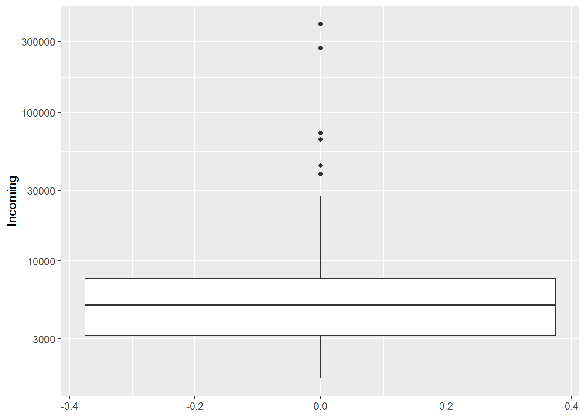
Toto je už lepšie. Skúsme si boxploty ešte rozdeliť po územných obvodoch krajských súdov a ukázať si vzdialené pozorovania.
findoutlier <- function(x) {
return(x < quantile(x, .25) - 1.5*IQR(x) | x > quantile(x, .75) + 1.5*IQR(x))
} # vytvorme si funkciu na hľadanie vzdialených pozorovaní
sudy_box <- sudy %>%
group_by(Region) %>%
mutate(outlier = ifelse(findoutlier(log10(Incoming)), Court, NA)) #vytvoríme premennú s Názvom súdu, ak ide o vzdialené pozorovanie za použitia log10
library(ggrepel)
ggplot(sudy_box, aes(y=Incoming, x = Region)) +
geom_boxplot() +
scale_y_log10() +
geom_text_repel(aes(label=outlier)) +
theme(axis.text.x = element_text(angle = 90, vjust = 0.3, hjust = 1))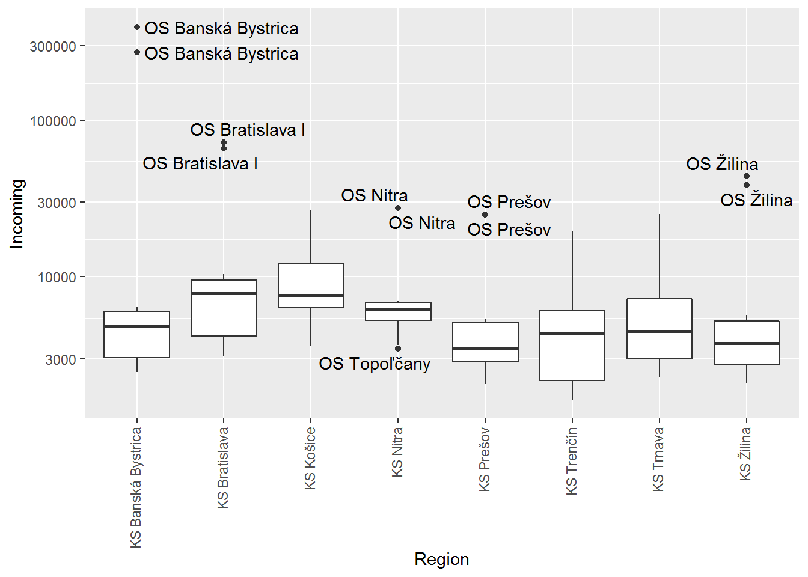
Podobné veci vieme samozrejme robiť aj pri histograme.
ggplot(sudy, aes(x = Incoming)) +
geom_histogram()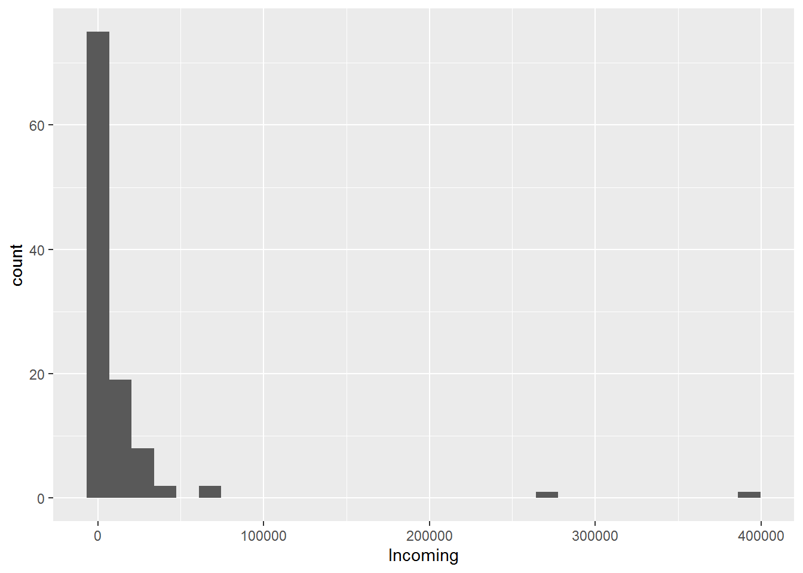
Aj pri histograme vidíme, že existujú vzdialené pozorovania, ktoré výrazne krivia distribúciu. Skúsme zopár úprav.ggplot(sudy, aes(x = Incoming)) +
geom_histogram() +
scale_x_log10() # logaritmus dobre funguje pri pravom zošikmení distribúcie - napr. platy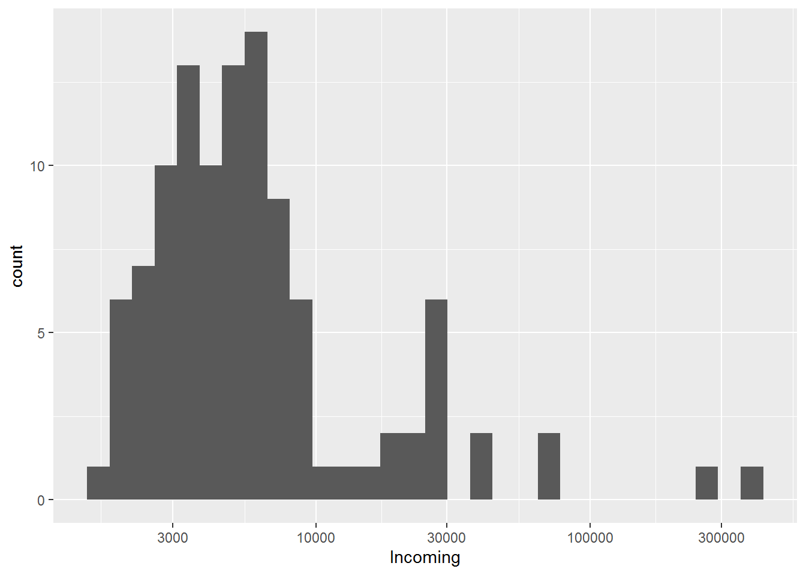
sudy_box <- sudy %>%
mutate(outlier2 = ifelse(findoutlier(Incoming), 1, 0)) # skúsme sa pozrieť na distribúciu bez vzdialených pozorovaní
sudy_box %>%
filter(outlier2 == 0) %>%
ggplot(aes(x = Incoming)) +
geom_histogram()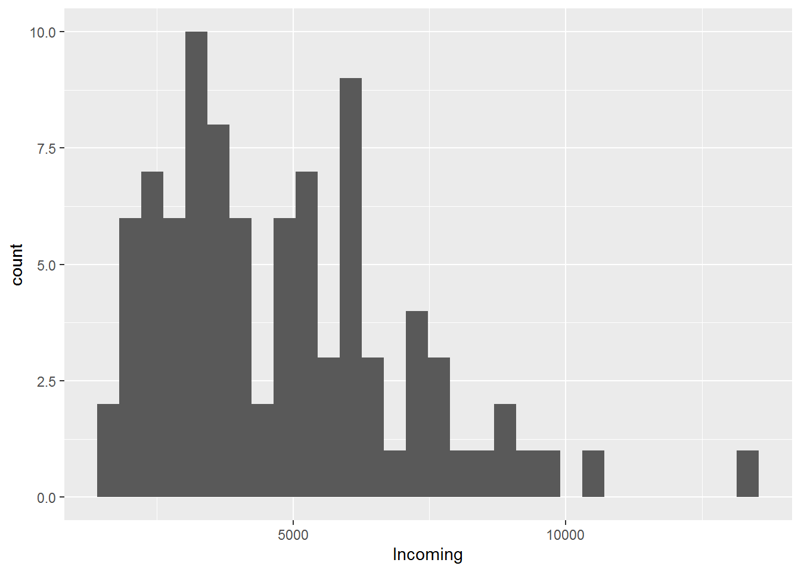
Posledným náhľadom na dáta môžu byť QQ grafy, ktoré sa často využívajú pri diagonostike premenných vstupujúcich do modelov. Princíp tejto metódy spočíva v tom, že na jednu os nanášame kvantily hypotetického normálneho rozdelenia a na druhú os kvantily skúmaného súboru. V prípade normálneho rozdelenia ležia všetky body grafu na priamke.ggplot(sudy, aes(sample = Incoming)) +
geom_qq() +
geom_qq_line()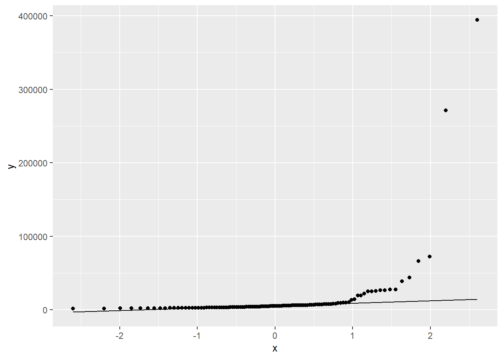
ggplot(sudy, aes(sample = log10(Incoming))) +
geom_qq() +
geom_qq_line()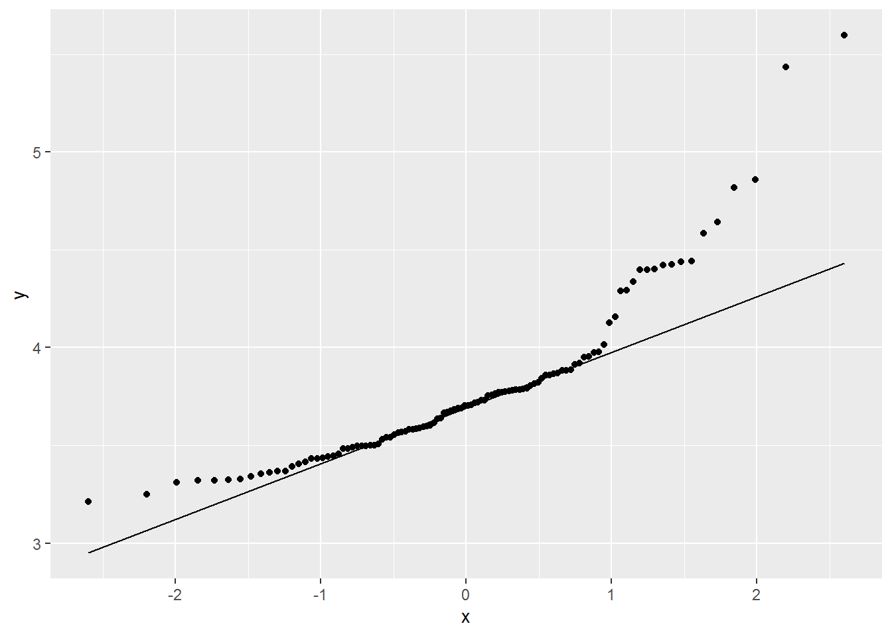
5.6 T-test
T-test je štatistický test, ktorý nám pomáha overiť dve hypotézy:
- či má normálne rozdelenie náhodne vybranej vzorky určitú konkrétnu strednú hodnotu (priemer)
- či dve normálne rozdelenia majúce rovnaký rozptyl, z ktorých pochádzajú dve nezávislé náhodne vybrané vzorky, majú rovnakú strednú hodnotu (priemer)
Zjednodušene sa t-test používa k porovnaniu toho, či sa výsledky merania jednej skupiny štatisticky líšia od výsledkov merania druhej skupiny (a teda, či nejde len o náhodný rozdiel).
Existujú tri rôzne druhy t-testu, ktoré vychádzajú z toho, ktorú z vyššie formulovaných hypotéz chceme testovať:
- jednovýberový t-test (one-sample)
- dvojvýberový t-test (two-sample)
- párový t-test (paired)
Pri využívaní t-testu treba mať na pamäti, že dáta musia spĺňať asumpcie testu ako napríklad normálna distibúcia premenných, homogénnosť rozptylov, dostatočne veľká vzorka a podobne. Tieto tu nebudeme overovať, ale vizualizácie, ktoré by sme použili už poznáte.
5.6.1 Jednovýberový t-test
Najprv si načítame dáta, s ktorými budeme pracovať.
ess_sk <- read_csv("./data/ESS10.csv") %>%
select(cntry, name, essround, proddate, edition, idno, dweight, pweight, polintr, trstprl, trstlgl, trstplt, stfdem, secgrdec, gndr) %>%
filter(cntry == "SK")
head(ess_sk)## # A tibble: 6 x 15
## cntry name essro~1 prodd~2 edition idno dweight pweight polintr trstprl
## <chr> <chr> <dbl> <chr> <dbl> <dbl> <dbl> <dbl> <dbl> <dbl>
## 1 SK ESS10e01_2 10 28.06.~ 1.2 10020 1.12 0.324 4 0
## 2 SK ESS10e01_2 10 28.06.~ 1.2 10032 0.796 0.324 2 9
## 3 SK ESS10e01_2 10 28.06.~ 1.2 10033 0.713 0.324 3 1
## 4 SK ESS10e01_2 10 28.06.~ 1.2 10036 1.26 0.324 2 6
## 5 SK ESS10e01_2 10 28.06.~ 1.2 10049 1.45 0.324 2 5
## 6 SK ESS10e01_2 10 28.06.~ 1.2 10070 2.08 0.324 3 4
## # ... with 5 more variables: trstlgl <dbl>, trstplt <dbl>, stfdem <dbl>,
## # secgrdec <dbl>, gndr <dbl>, and abbreviated variable names 1: essround,
## # 2: proddate
## # i Use `colnames()` to see all variable namesOdstráňme odpovede, ktoré v analýze nepotrebujeme - No answer, Refusal a podobne (v naozajstnej analýze tieto odpovede tiež prinášajú informačnú hodnotu, ale tu by nám to zbytočne komplikovali) a spravme z gndr premennej faktor s levelmi “male” a “female”.
ess_sample <- ess_sk %>%
select(cntry, polintr:gndr) %>%
filter(polintr < 7, trstprl < 11, trstlgl < 11, trstplt < 11, stfdem < 11, secgrdec < 6, gndr < 3) %>%
mutate(gndr = factor(gndr, levels = c(1,2), labels = c("male", "female")))Pozrime sa, či slovenská spoločnosť verí konšpiráciám (veľmi zjednodušene pre účely príkladu). Použijeme na to premennú secgrdec, ktorá je kódovaná nasledovne:
Small secret group of people responsible for making all major decisions in world politics
K1 How much do you agree or disagree with the following statements? A small secret group of people is responsible for making all major decisions in world politics.
Value Category
- 1 Agree strongly
- 2 Agree
- 3 Neither agree nor disagree
- 4 Disagree
- 5 Disagree strongly
- 7 Refusal*
- 8 Don’t know*
- 9 No answer*
Stredná hodnota je 3, všetko pod 3 považujme za konšpiračný postoj.
V R sa t-test robí pomocou t.test funkcie. Od toho, aký typ t-testu chcete robiť záleží aj zápis argumentov v tejto funkcii. Pri jednovýberovom t-teste treba ako argument doplniť premennú, ktorá nás zaujíma a hodnotu, od ktorej testujeme, či je rozdielny priemer tejto sledovanej premennej.
t.test(ess_sample$secgrdec, mu = 3)##
## One Sample t-test
##
## data: ess_sample$secgrdec
## t = -1.8867, df = 1191, p-value = 0.05944
## alternative hypothesis: true mean is not equal to 3
## 95 percent confidence interval:
## 2.864807 3.002643
## sample estimates:
## mean of x
## 2.933725Test ukazuje, že priemer je nižší ako 3, avšak p-value testu je nad najčastejšie stanovenou hranicou významnosti (0,05). Tým pádom môžeme povedať, že nezamietame nulovú hypotézu t-testu o zhodnosti priemeru sledovanej premennej a nami definovanej hodnoty.
5.6.2 Dvojvýberový t-test
Teraz sa pozrime, či je rozdiel v akceptácií vyššie spomenutého výroku medzi ženami a mužmi. Pri definovaní argumentov použijeme zápis, ktorý sa často používa pri štatistických funkciách. Najprv sa definuje závislá premenná, v tomto prípade secgrdec. Za závislou premennou nasleduje symbol ~, za ktorý sa definujú nezávislé premenné. V našom prípade ide o gndr. Nakoniec sa definujú dáta, z ktorých premenné pochádzajú.
t.test(secgrdec ~ gndr, data = ess_sample)##
## Welch Two Sample t-test
##
## data: secgrdec by gndr
## t = 0.18326, df = 1168.7, p-value = 0.8546
## alternative hypothesis: true difference in means between group male and group female is not equal to 0
## 95 percent confidence interval:
## -0.1253946 0.1512328
## sample estimates:
## mean in group male mean in group female
## 2.940455 2.927536Priemer oboch skupín je približne rovnaký a ako vidíme p-value je vysoko nad hranicou 0.05. Tým pádom môžeme povedať, že medzi mužmi a ženami nie je rozdiel v ich postoji ku konceptu konšpirácie meraného našou otázkou. Skúsme si vizualizovať t-test prostredníctvom zobrazenia skupinových priemerov a ich štandardných chýb:
ess_sample %>%
group_by(gndr) %>%
summarise(group_mean = mean(secgrdec, na.rm = TRUE),
se = sd(secgrdec, na.rm = TRUE) / sqrt(length(secgrdec))) %>%
ggplot(aes(x = gndr, y = group_mean, color = gndr)) +
geom_point(size = 2) +
geom_errorbar(aes(ymin = group_mean - se, ymax = group_mean + se), width=.05) +
theme_minimal()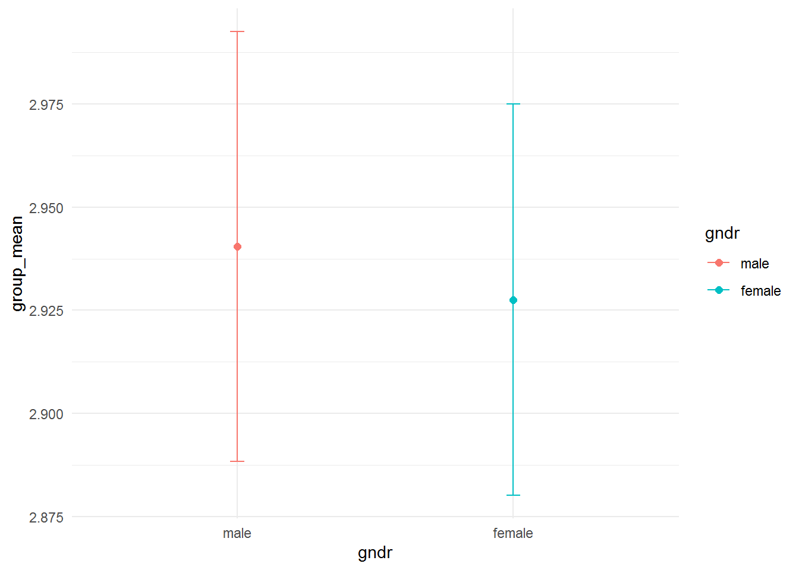
5.6.3 párový t-test
Tento t-test sa často využíva na overenie toho, či nami zvolený treatment má na skupinu efekt. Preto potrebujeme dáta, ktoré určitú premennú merajú pred zásahom a potom aj po zásahu. V reči R potrebujeme dva vektory rovnakej dĺžky a rovnakého poradia pre jednotlivé pozorovania. V používanom datasete takéto dáta nemáme, preto si pre príklad dáta vytvoríme.
# Váha ľudí pred experimentálnym zásahom (napr. dieta)
before <-c(89, 78, 82, 65, 101, 55, 93, 72, 51, 84)
# Váha ľudí po experimentálnom zásahu
after <-c(85, 77, 82, 60, 97, 53, 91, 69, 52, 79)
# Vytvoríme data frame
my_data <- data.frame(
group = rep(c("before", "after"), each = 10),
weight = c(before, after)
)Pri takto štruktúrovanom datasete potom môžeme použíť párový t-test. Do argumentov t.test funkcie musíme zadať paired = TRUE
t.test(weight ~ group, data = my_data, paired = TRUE)##
## Paired t-test
##
## data: weight by group
## t = -3.8224, df = 9, p-value = 0.004075
## alternative hypothesis: true mean difference is not equal to 0
## 95 percent confidence interval:
## -3.979558 -1.020442
## sample estimates:
## mean difference
## -2.5Výsledok tohto testu nám hovorí, že existuje štatisticky signifikantný rozdiel medzi váhou participantov pred experimentálnym zásahom a váhou po zásahu. V priemere ide o úbytok 2,5 kg.
Tento test sa dá urobiť aj iným spôsobom (podobne ako dvojvýberový t-test), pričom použijeme subset jednotlivých kategórií.
t.test(after, before, paired = TRUE)##
## Paired t-test
##
## data: after and before
## t = -3.8224, df = 9, p-value = 0.004075
## alternative hypothesis: true mean difference is not equal to 0
## 95 percent confidence interval:
## -3.979558 -1.020442
## sample estimates:
## mean difference
## -2.55.7 ANOVA
Ak sa zaujímame o rozdiely medzi viac ako dvoma skupinami (a teda 2 a viac priemermi), tak môžeme použiť Analysis of Variance test, tzv. ANOVA. Nasledujúci príklad bude jednoduchá “one-way” ANOVA - jedna závislá premenná a jedna nezávislá premenná. Existuje viacero druhov ANOVA, avšak tie tu nebudeme rozoberať.
Pre príklad použijeme airquality dáta. Načítajme si dáta a pozrime sa na ne.
data(airquality)
head(airquality)## Ozone Solar.R Wind Temp Month Day
## 1 41 190 7.4 67 5 1
## 2 36 118 8.0 72 5 2
## 3 12 149 12.6 74 5 3
## 4 18 313 11.5 62 5 4
## 5 NA NA 14.3 56 5 5
## 6 28 NA 14.9 66 5 6ANOVA sa v R spúšta prostredíctvom aov funkcie a jej najjednochší zápis vyzerá rovnako ako pri t-teste. Musíme definovať závislú a nezávislú premennú a povedať funkcii, ktorý objekt (dataset) má použiť. Spustíme ANOVA a na výsledky sa pozrieme prostredníctvom funkcie summary.
anova1 <- aov(Temp ~ Month, data=airquality)
anova1## Call:
## aov(formula = Temp ~ Month, data = airquality)
##
## Terms:
## Month Residuals
## Sum of Squares 2413.042 11204.840
## Deg. of Freedom 1 151
##
## Residual standard error: 8.614188
## Estimated effects may be unbalancedsummary(anova1)## Df Sum Sq Mean Sq F value Pr(>F)
## Month 1 2413 2413.0 32.52 0.0000000603 ***
## Residuals 151 11205 74.2
## ---
## Signif. codes: 0 '***' 0.001 '**' 0.01 '*' 0.05 '.' 0.1 ' ' 1Znova, najdôležitejšia informácia v tomto zhrnutí je F value a k nej prislúchajúca p-value. Keď je p-value nižšia ako naša definovaná hranica štatistickej významnosti (0,05 v našom prípade), tak môžeme povedať, že existuje štatisticky signifikantný rozdiel medzi priemermi skupín. V našom prípade je p-value nižšia ako 0,05, čo znamená, že môžeme zamietnuť našu nulovú hypotézu, ktorá hovorí o tom, že neexistuje rozdiel medzi priemermi skupín (čiže existujú štatisticky významné rozdiely v teplotách medzi sledovanými mesiacmi).
Ak chceme ANOVA vizualizovať, tak môžeme takisto ako pri t-teste, zobraziť priemery jednotlivých skupín s ich štandradnými chybami.
anova_sum <- airquality %>%
group_by(Month) %>%
summarise(mean_temp = mean(Temp), sd = sd(Temp), se = sd/sqrt(length(Temp)))
anova_sum## # A tibble: 5 x 4
## Month mean_temp sd se
## <int> <dbl> <dbl> <dbl>
## 1 5 65.5 6.85 1.23
## 2 6 79.1 6.60 1.20
## 3 7 83.9 4.32 0.775
## 4 8 84.0 6.59 1.18
## 5 9 76.9 8.36 1.53ggplot(data = anova_sum,
mapping = aes(x = Month,
y = mean_temp)) +
geom_errorbar(aes(ymin = mean_temp - se, ymax = mean_temp + se), width = 0.1) +
geom_line() +
geom_point() +
theme(legend.position = "none")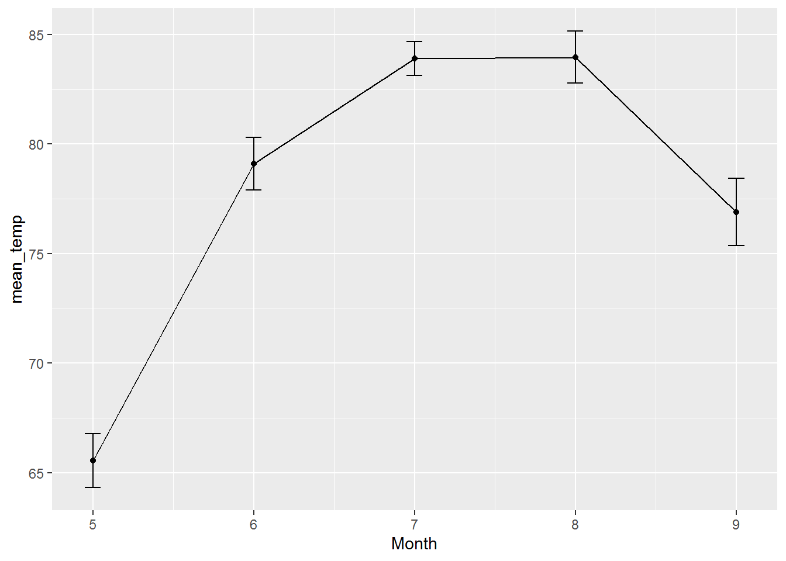
5.8 Chi-square test nezávislosti
Chi-square test nezávislosti nám dáva odpoveď na otázku, či sú dve kategorické premenné na sebe nezávislé alebo nie (či teda medzi nimi existuje vzťah). Pri dvoch kategorických premenných máme počty jednotlivých hodnôt v rámci prieniku kategórií. Už samotná cross-tabuľka nám dáva ideu, či sú dve kategorické premenné na sebe závislé. Chi-square test nezávisloti nám to môže aj štatisticky potvrdiť (prípadne vyvrátiť).
Na ukážku použijeme znova ESS dataset a pozrieme sa, či sú záujem o politiku a spokojnosť s demokraciou nejak previazané. Premenné, ktoré analyzujeme sú kódované takto:
polintr - How interested in politics
B1 How interested would you say you are in politics - are you…
Value Category
- 1 Very interested
- 2 Quite interested
- 3 Hardly interested
- 4 Not at all interested
- 7 Refusal*
- 8 Don’t know*
- 9 No answer*
stfdem - How satisfied with the way democracy works in country
B30 And on the whole, how satisfied are you with the way democracy works in [country]?
Value Category
- 0 Extremely dissatisfied
- 1 1
- 2 2
- 3 3
- 4 4
- 5 5
- 6 6
- 7 7
- 8 8
- 9 9
- 10 Extremely satisfied
- 77 Refusal*
- 88 Don’t know*
- 99 No answer*
Chi-square sa dá spraviť dvoma základnými spôsobmi:
- za použitia
chisq.testfunkcie - za použitia
crosstabfunkcie z knižnicedescr
Vyskúšajme si teda tento test spraviť.
chisq.test(ess_sample$polintr, ess_sample$stfdem)##
## Pearson's Chi-squared test
##
## data: ess_sample$polintr and ess_sample$stfdem
## X-squared = 90.128, df = 30, p-value = 0.00000006281p-value je pod hranicou štatistickej signifikantnosti (0,05), preto zamietame nulovú hypotézu, že premenné sú na sebe nezávislé a môžeme povedať, že medzi nimi je nejaký vzťah. Z takto prevedeného testu ale nevieme povedať aký. Nainštalujme a načitajme si knižnicu descr a pozrime sa v analýze na viac detailov. Premenné definujeme ich odkazom na objekt datasetu a ich názvom. Okrem toho vo funkcii špecifikujeme argumenty chisq a plot ako TRUE.
#install.packages(descr) #ak nemáte nainštalovanú knižnicu descr, odstránte # a spustite príkaz
library(descr)
crosstab(ess_sample$polintr, ess_sample$stfdem, chisq = T, plot = T)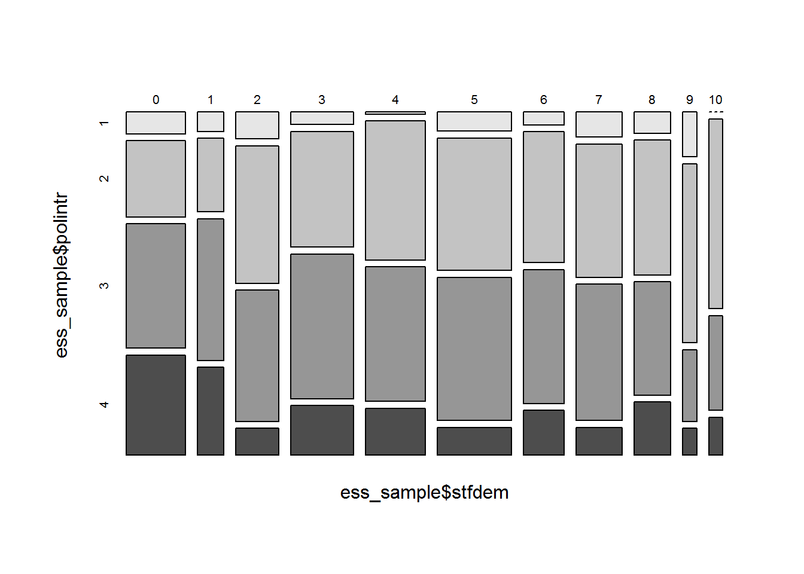
## Cell Contents
## |-------------------------|
## | Count |
## |-------------------------|
##
## ========================================================================================================
## ess_sample$stfdem
## ess_sample$polintr 0 1 2 3 4 5 6 7 8 9 10 Total
## --------------------------------------------------------------------------------------------------------
## 1 10 4 9 6 1 11 4 9 6 5 0 65
## --------------------------------------------------------------------------------------------------------
## 2 35 15 46 56 65 76 41 48 38 20 20 460
## --------------------------------------------------------------------------------------------------------
## 3 57 29 44 70 63 82 42 49 32 8 10 486
## --------------------------------------------------------------------------------------------------------
## 4 46 18 9 24 22 16 14 10 15 3 4 181
## --------------------------------------------------------------------------------------------------------
## Total 148 66 108 156 151 185 101 116 91 36 34 1192
## ========================================================================================================
##
## Statistics for All Table Factors
##
## Pearson's Chi-squared test
## ------------------------------------------------------------
## Chi^2 = 90.12754 d.f. = 30 p = 0.0000000628
##
## Minimum expected frequency: 1.854027
## Cells with Expected Frequency < 5: 4 of 44 (9.090909%)Stále je tabuľka a graf málo čitateľný, skúsme zopár úprav. Pridajme si slovné označenia jednotlivých kategórií premennej polintr.
ess_sample <- ess_sample %>%
mutate(polintr2 = factor(polintr, labels = c("Very interested", "Quite interested", "Hardly interested", "Not at all interested"), ordered = TRUE))
crosstab(ess_sample$polintr2, ess_sample$stfdem, chisq = T, plot = T)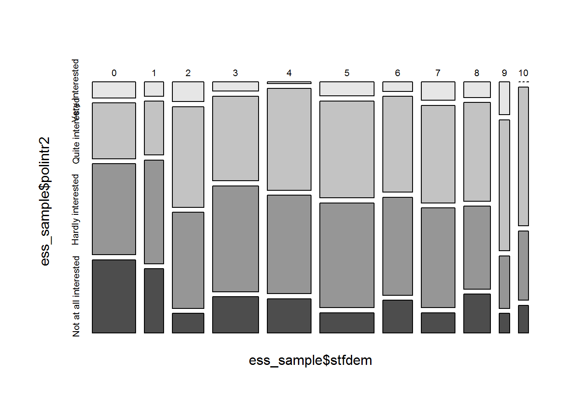
## Cell Contents
## |-------------------------|
## | Count |
## |-------------------------|
##
## ===========================================================================================================
## ess_sample$stfdem
## ess_sample$polintr2 0 1 2 3 4 5 6 7 8 9 10 Total
## -----------------------------------------------------------------------------------------------------------
## Very interested 10 4 9 6 1 11 4 9 6 5 0 65
## -----------------------------------------------------------------------------------------------------------
## Quite interested 35 15 46 56 65 76 41 48 38 20 20 460
## -----------------------------------------------------------------------------------------------------------
## Hardly interested 57 29 44 70 63 82 42 49 32 8 10 486
## -----------------------------------------------------------------------------------------------------------
## Not at all interested 46 18 9 24 22 16 14 10 15 3 4 181
## -----------------------------------------------------------------------------------------------------------
## Total 148 66 108 156 151 185 101 116 91 36 34 1192
## ===========================================================================================================
##
## Statistics for All Table Factors
##
## Pearson's Chi-squared test
## ------------------------------------------------------------
## Chi^2 = 90.12754 d.f. = 30 p = 0.0000000628
##
## Minimum expected frequency: 1.854027
## Cells with Expected Frequency < 5: 4 of 44 (9.090909%)To už je lepšie, ale stále sa s tým dá niečo robiť. Zlúčme si hodnoty do menšieho počtu kategórií a pridajme im názvy. Okrem toho si zobrazme aj očakávané hodnoty na základe chi-square rozdelenia (expected = T), percentuálne zastúpenie frekvencií v stĺpcoch (prop.c = T) a rozdiel medzi nami meranou hodnotou a očakávanou hodnotou (resid = T).
ess_sample <- ess_sample %>%
mutate(polintr3 = if_else(polintr2 == "Very interested" | polintr2 == "Quite interested", "Interested", "Not interested"),
stfdem2 = factor(case_when(stfdem <= 3 ~ "Dissatisfied",
stfdem > 3 & stfdem < 7 ~ "Neutral",
stfdem >= 7 ~ "Satisfied"),
labels = c("Dissatisfied", "Neutral", "Satisfied" = "Satisfied"),
ordered = TRUE))
crosstab(ess_sample$polintr3, ess_sample$stfdem2,
chisq = T,
expected = T,
prop.c = T,
resid = T,
plot = T)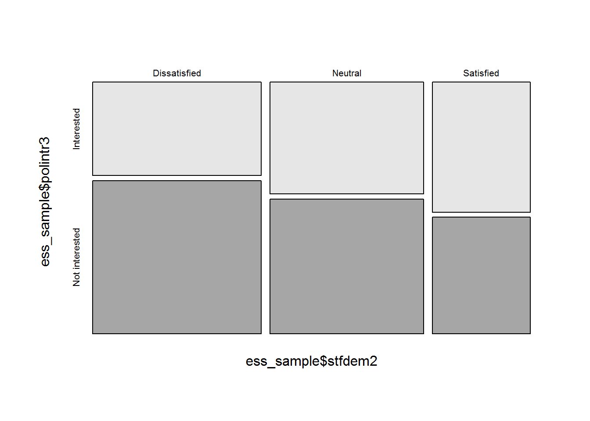
## Cell Contents
## |-------------------------|
## | Count |
## | Expected Values |
## | Column Percent |
## | Residual |
## |-------------------------|
##
## =================================================================
## ess_sample$stfdem2
## ess_sample$polintr3 Dissatisfied Neutral Satisfied Total
## -----------------------------------------------------------------
## Interested 181 198 146 525
## 210.5 192.5 122.0
## 37.9% 45.3% 52.7%
## -29.529 5.529 23.999
## -----------------------------------------------------------------
## Not interested 297 239 131 667
## 267.5 244.5 155.0
## 62.1% 54.7% 47.3%
## 29.529 -5.529 -23.999
## -----------------------------------------------------------------
## Total 478 437 277 1192
## 40.1% 36.7% 23.2%
## =================================================================
##
## Statistics for All Table Factors
##
## Pearson's Chi-squared test
## ------------------------------------------------------------
## Chi^2 = 16.12227 d.f. = 2 p = 0.000316
##
## Minimum expected frequency: 122.0008Samozrejme ide o zjednodušenia, ktoré nemusia vždy dávať zmysel, avšak niekedy je možné takýmto spôsobom spraviť analýzu prehľadnejšou.
Ako ste mohli vidieť, tak chisq argument nám dopočíta chi-square a zobrazí ho pod cross-tabuľkou. Okrem toho sa v rámci funkcie crosstab dá pridávať pomerné zastúpenie v jednotlivých skupinách počítané či už po riadkoch (prop.r), stĺpcoch (prop.c) alebo celkovo (prop.t). Keďže p-value je nižšia ako naša hranica štatistickej signifikantnosti (0,05), tak na základe takejto analýzy môžeme povedať, že existuje vzťah medzi záujmom o politiku a spokojnosťou so stavom demokracie, pričom na základe hodnôt jednej premennej vieme predikovať hodnoty tej druhej. Treba sa však pozrieť aj na to, aký silný je tento vzťah.Použijeme na to Cramer’s V, ktoré meria relatívnu silu vzťahu medzi analyzovanými premennými. Nadobúda hodnoty od 0 do 1, pričom približne:
- > 0,5 silný vzťah
- od 0,3 do 0,5 mierny vzťah
- od 0,1 do 0,3 slabý vzťah
- 0 do 0,1 slabý, ak nejaký vzťah
Na výpočet tejto hodnoty použijeme cramer funkciu z knižnice greybox.
#install.packages("greybox") #ak nemáte nainštalovanú knižnicu greybox, odstránte # a spustite príkaz
library(greybox)
cramer(ess_sample$polintr3, ess_sample$stfdem2)## Cramer's V: 0.1089
## Chi^2 statistics = 16.1223, df: 2, p-value: 0.0003Cramer’s V dosahuje v našom prípade hodnotu približne 0,11, čo znamená, že ide o slabý vzťah medzi premennými.
Chi-square si vieme vizualizovať aj inak, ako to bolo ukázané vyššie. Použijeme na to rozšírenie ggplot, ktoré sa volá ggstatsplot.
#install.packages("ggstatsplot") #ak nemáte nainštalovanú knižnicu ggstatsplot, odstránte # a spustite príkaz
library(ggstatsplot)
ggbarstats(
data = ess_sample,
x = polintr3,
y = stfdem2,
label = "both",
proportion.test = NULL
) +
labs(caption = NULL)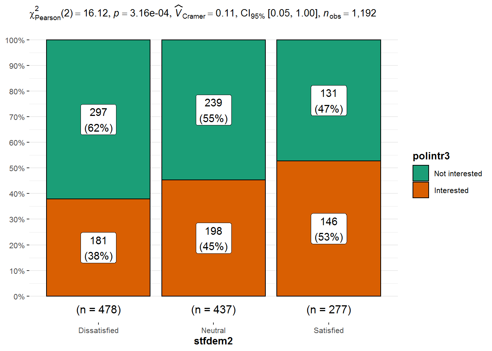
ggbarstats nám vytvorí podobný graf ako crosstab funkcia, avšak máme k nemu aj dodatočné informácie o hodnote chi-square testu, p-value, či Cramer’s V.
5.9 Korelácia
Pravdepodobne jeden z najpoužívanejších spôsobov náhľadu na asociácie medzi premennými je korelácia. Samozrejme v štatistike existuje viac druhov korelácie. My sa budeme v tejto časti venovať Pearsonovej korelácii, ktorá je väčšinou tým, čo si ľudia predstavia, keď sa rozprávame o korelácii. Korelácia ukazuje na vzťah medzi dvoma priebehovými premennými a v R sa dá spraviť pomocou cor a cor.test funkcií. Prvá funkcia jednoducho vypočíta koreláciu medzi premennými, druhá k tomu ešte vypočíta štatistický test, ktorý testuje, či je korelácia štatistický rozdielna od 0.
V tejto časti použijeme gapminder dataset, ktorý sme využívali v časti venovanej ggplot. Pre ukážku použijeme dáta len pre rok 2007.
library(gapminder)
gapminder_cs <- gapminder %>%
filter(year == 2007)
head(gapminder_cs)## # A tibble: 6 x 6
## country continent year lifeExp pop gdpPercap
## <fct> <fct> <int> <dbl> <int> <dbl>
## 1 Afghanistan Asia 2007 43.8 31889923 975.
## 2 Albania Europe 2007 76.4 3600523 5937.
## 3 Algeria Africa 2007 72.3 33333216 6223.
## 4 Angola Africa 2007 42.7 12420476 4797.
## 5 Argentina Americas 2007 75.3 40301927 12779.
## 6 Australia Oceania 2007 81.2 20434176 34435.cor funkcia je užitočná, pretože Vám umožňuje pozrieť sa na koreláciu viacerých dvojíc premenných naraz. Pozrime sa teda na korelácie všetkých dvojíc premenných v datasete. cor funkcia je senzitívna na chýbajúce hodnoty, preto musíme v argumentoch špecifikovať, aby použila len kompletné záznamy. pairwise.complete argument povie funkcii, aby na výpočet každej korelácie použila vzorku záznamov, ktoré sú kompletné.
Okrem toho argumentom method špecifikujeme, aký typ korelácie chceme použiť.
cor(gapminder_cs[, 4:6], use = "pairwise.complete", method = "pearson")## lifeExp pop gdpPercap
## lifeExp 1.00000000 0.04755312 0.6786624
## pop 0.04755312 1.00000000 -0.0556756
## gdpPercap 0.67866240 -0.05567560 1.0000000Zároveň môžeme pomocou funkcie cor.test otestovať, či sú odhadnuté korelácie štatisticky signifikantné. Pozrime sa na HDP na obyvateľa a počet obyvateľov. Tieto dve premenné majú medzi sebou negatívnu koreláciu, ale zatiaľ nevieme, či je štatisticky signifikantná alebo nie.
cor1 <- cor.test(gapminder_cs$pop, gapminder_cs$gdpPercap, method = "pearson")
cor1##
## Pearson's product-moment correlation
##
## data: gapminder_cs$pop and gapminder_cs$gdpPercap
## t = -0.65979, df = 140, p-value = 0.5105
## alternative hypothesis: true correlation is not equal to 0
## 95 percent confidence interval:
## -0.2183999 0.1100611
## sample estimates:
## cor
## -0.0556756p-value testu je v tomto prípade vyššia ako naša hranica signifikantnosti (0,05), čiže negatívna korelácia medzi týmito dvoma premennými nie je štatisticky signifikantná.
Pozrime sa na strednú dĺžku života a HDP na obyvateľa.
cor.test(gapminder_cs$lifeExp, gapminder_cs$gdpPercap)##
## Pearson's product-moment correlation
##
## data: gapminder_cs$lifeExp and gapminder_cs$gdpPercap
## t = 10.933, df = 140, p-value < 0.00000000000000022
## alternative hypothesis: true correlation is not equal to 0
## 95 percent confidence interval:
## 0.5786217 0.7585843
## sample estimates:
## cor
## 0.6786624Môžeme vidieť, že v tomto prípade ide o štatisticky signifikantnú koreláciu, keďže p-value je pod našou hranicou významnosti (0,05).
Okrem týchto dvoch funkcií nám knižnica Hmisc prostredníctvom funkcie rcorr uľahčuje náhľady na štatistickú signifikantnosť jednotlivých dvojíc premenných.
library(Hmisc)
rcorr(as.matrix(gapminder_cs[, 4:6]))## lifeExp pop gdpPercap
## lifeExp 1.00 0.05 0.68
## pop 0.05 1.00 -0.06
## gdpPercap 0.68 -0.06 1.00
##
## n= 142
##
##
## P
## lifeExp pop gdpPercap
## lifeExp 0.5741 0.0000
## pop 0.5741 0.5105
## gdpPercap 0.0000 0.5105Zároveň si vzťahy medzi dvojicami premenných môžeme aj vizualizovať. V prvom rade sa to dá prostredníctvom bodového grafu.
unloadNamespace("Hmisc")
ggplot(gapminder_cs, aes(gdpPercap, lifeExp)) +
geom_point() +
geom_smooth(method = lm)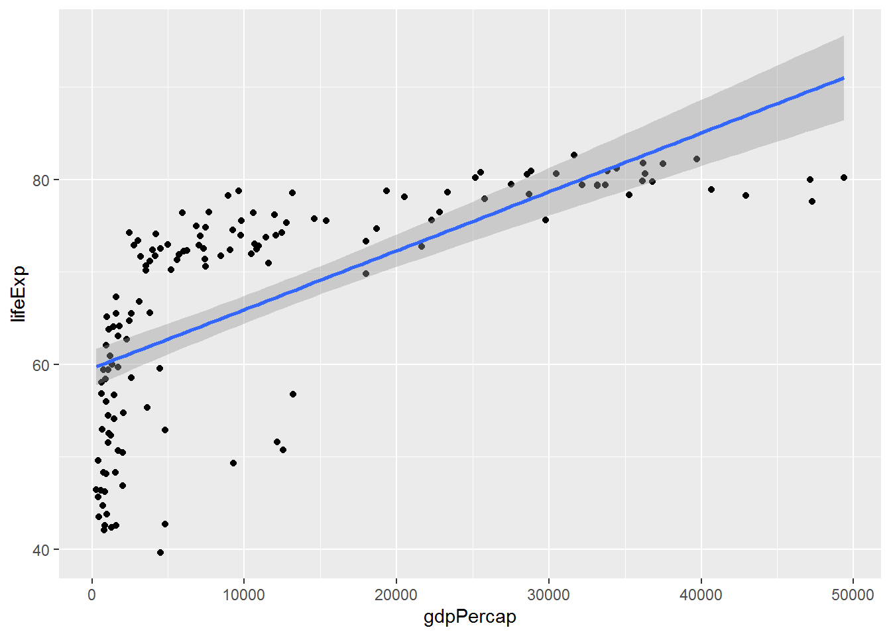
Druhou možnosťou je vytvoriť heatmap pomocou rozšírenia ggplot - GGally a ggcorr funkcie.
#install.packages("GGally") #ak nemáte nainštalovanú knižnicu GGally, odstránte # a spustite príkaz
library(GGally)
ggcorr(gapminder_cs[, 4:6], label = TRUE)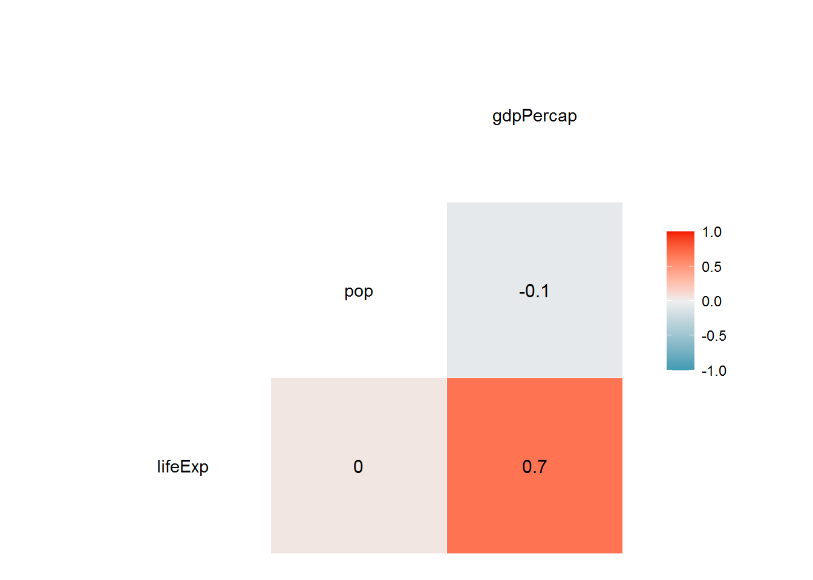
5.10 Lineárna regresia
Pravdepodobne najjednoduchším a najpoznanejším štatistickým modelom je lineárna regresia. V zásade umožňuje vyjadriť priebehovú premennú ako lineárnu kombináciu (súčet) jednej alebo viacerých iných priebehových/binárných premenných tak, aby sme mali približnú predstavu o tom, o koľko sa naša závislá premenná zmení, ak sa naša nezávislá premenná zmení o určité množstvo. Je to jednoduchá, ale vcelku silná technika, pričom jednoduchý lineárny model môže byť využitý na obrovské množstvo analýz. Výhodou jednoduchej lineárnej regresie je zároveň jej relatívna pochopiteľnosť. V jej OLS (ordinary least square - metóda najmenších štvorcov) forme je základným pravidlom minimalizovať súčet štvorcových rozdielov medzi reálnou a predikovanou hodnotou.
Aby nám lineárna regresia dávala správne výsledky, tak musí byť splnených niekoľko asumpcií/podmienok, z ktorých hlavné sú:
1. Závislá premenná musí byť priebehová
2. Do modelu musí vstupovať dostatočný počet pozorovaní
- nepísané pravidlá sa rôznia, ale nie je úplne vhodné robiť regresiu s menej ako 20 pozorovaniami
- viac menej istí, že počet pozorovaní nie je problém, si môžete byť pri 100+ pozorovaniach a nie veľkého počtu nezávislých premenných
- čím viac chceme dostať z dát, teda čím viac vysvetľujúcich premenných máme, tým viac pozorovaní potrebujeme, aby sme mali stabilné (spoľahlivé) a validné odhady o vzťahoch, ktoré nás zaujímajú
3. Dáta musia byť lineárne
- vzťah medzi závislou a nezávislou premennou je lineárny
4. Normálna distribúcia reziduí
- náhodné chyby/odchýlky (reziduá - rozdiely medzi skutočne nameranými hodnotami závislej premennej a jej predikovanými hodnotami) musia mať normálnu distribúciu
5. Homogénnosť rozptylu náhodných chýb (reziduí)
- reziduá musia mať konštantný rozptyl
6. Neexistencia vzdialených pozorovaní ovplyvňujúcich regresné koeficienty
7. Nezávislosť náhodných chýb (pri datasetoch, keď pre 1 entitu zbierame pozorovania opakovane vo viacerých časových horizontoch)
Použime dataset gapminder_cs, ktorý sme si vytvorili vyššie a vytvorme model, ktorý sa bude snažiť vysvetlovať strednú dĺžku života v niektorých krajinách ako funkciu HDP na obyvateľa, počtu obyvateľov a toho, na akom svetadiele sa krajina nachádza.
V R vieme lineárny model skonštruovať pomocou lm funkcie, ktorá akceptuje rovnaké argumenty, ako štatistické funkcie, ktoré sme si v predchádzajúcich kapitolách ukazovali. Potrebujeme špecifikovať našu závislú a nezávislé premenné v modeli, keď na ľavej strane sa nachádza závislá premenná a na pravej nezávislé. Zároveň musíme v argumentoch funkcii povedať, aký dataset treba použiť.
reg1 <- lm(lifeExp ~ gdpPercap + pop + continent, data = gapminder_cs)
summary(reg1)##
## Call:
## lm(formula = lifeExp ~ gdpPercap + pop + continent, data = gapminder_cs)
##
## Residuals:
## Min 1Q Median 3Q Max
## -22.8199 -2.8905 0.1574 2.9046 20.0585
##
## Coefficients:
## Estimate Std. Error t value
## (Intercept) 53.7141900516204 0.9355709763972 57.413
## gdpPercap 0.0003479123814 0.0000571704015 6.086
## pop 0.0000000009586 0.0000000039259 0.244
## continentAmericas 16.0313726693021 1.6713252557392 9.592
## continentAsia 12.5640427449841 1.6209815371922 7.751
## continentEurope 15.1989177617593 1.9662500363509 7.730
## continentOceania 16.6222095573924 4.9925674316223 3.329
## Pr(>|t|)
## (Intercept) < 0.0000000000000002 ***
## gdpPercap 0.00000001127738 ***
## pop 0.80747
## continentAmericas < 0.0000000000000002 ***
## continentAsia 0.00000000000197 ***
## continentEurope 0.00000000000220 ***
## continentOceania 0.00112 **
## ---
## Signif. codes: 0 '***' 0.001 '**' 0.01 '*' 0.05 '.' 0.1 ' ' 1
##
## Residual standard error: 6.597 on 135 degrees of freedom
## Multiple R-squared: 0.7141, Adjusted R-squared: 0.7014
## F-statistic: 56.2 on 6 and 135 DF, p-value: < 0.00000000000000022Prvou vecou, na ktorú sa ešte pred vyhodnocovaním jednotlivých koeficientov nezávislých premenných pozrieme je model fit. Ten sa určuje prostredníctvom R-squared hodnôt v spodnej časti R výstupu. Ako môžete vidieť, tak máme zobrazené dve R-squared hodnoty, pričom odporúčam riadiť sa podľa adjusted R-squared, pretože výpočet pri tejto hodnote berie do úvahy počet premenných a počet pozorovaní v modeli. Hocijaká premenná pridaná do modelu, aj keď medzi ňou a závislou premennou nie je vzťah, zvyšuje hodnotu model fitu (obyčajné R-squared) na základe náhody a preto by sme to mali vziať do úvahy. To presne adjusted R-squared robí.
V tomto príklade vidno, že máme naozaj dobrý model fit, keď zvolené nezávislé vysvetľujú približne 70% rozptylu závislej premennej. S takto dobrým modelom sa môžeme bez problémov pustiť do hodnotenia a interpretácie koeficientov. Tie nám hovoria, že zmena (navýšenie) o jeden dolár v rámci HDP na obyvateľa premennej zvyšuje strednú dĺžku života o 0,00035.
Zároveň vidíme, že veľkosť efektu premennej svetadiel znižuje veľkosť efektu HDP na obyvateľa. Toto by nemalo byť prekvapením, keďže pravdepodobne nemáme plne špecifikovaný model, keď premenná svetadiel v sebe s veľkou pravdepodobnosťou obsahuje efekt iných faktorov/premenných.
Ako aj pri iných štatistických modeloch/testoch, niekedy je lepšie výsledky vizualizovať. Pre regresie sa to dá jedoducho pomocou effects knižnice. Táto vie vybrať a vizualizovať efekt jednej premennej spoločne s jej intervalmi spoľahlivosti. Funkcia effect vypočíta efekt, pričom ako argumenty akceptuje názov premennej, ktorej efekt chceme vizualizovať a názov modelu, v ktorom táto premenná je. Takto definovaný efekt jednej premennej je vizualizovaný pomocou generickej funkcie base R plot.
#install.packages("effects") #ak nemáte nainštalovanú knižnicu effects, odstránte # a spustite príkaz
library(effects)
plot(effect("gdpPercap", reg1))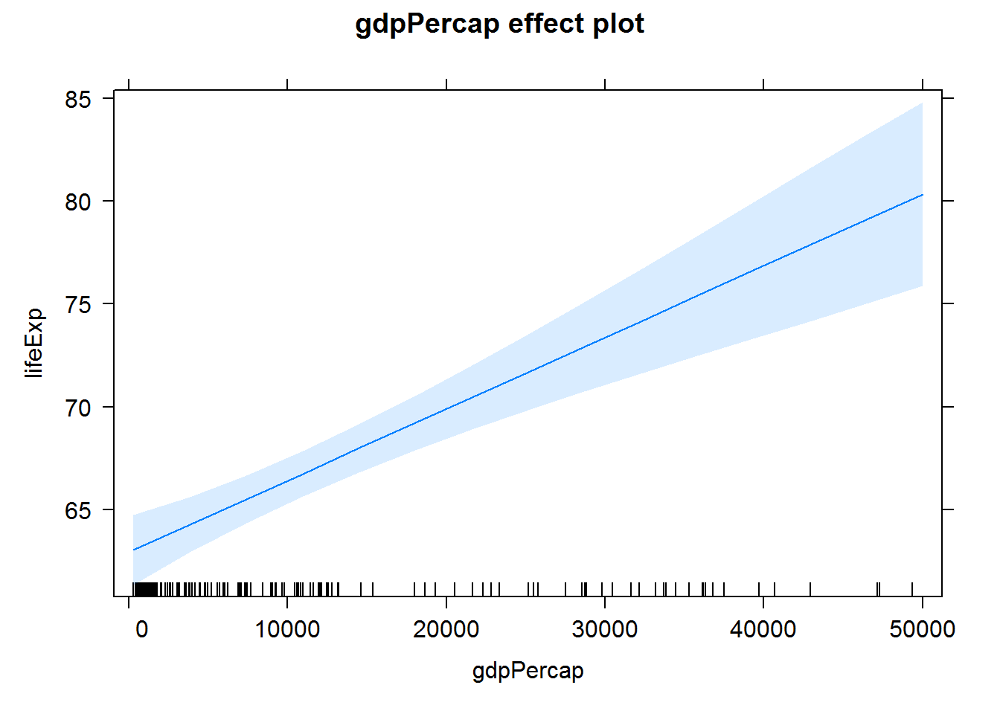
plot(effect("continent", reg1))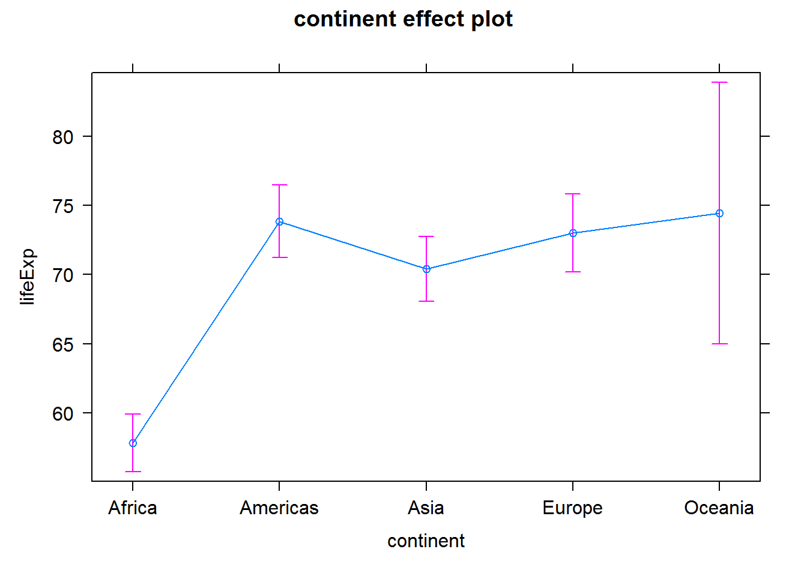
Keďže z predošlých ukážok vieme, že HDP na obyvateľa dáta sú vpravo zošikmené, tak môžeme vyskúšať transformovať túto premennú pomocou logaritmu. Túto transformáciu vieme spraviť v rámci definovania nezávislých premenných v modeli bez toho, aby sme menili samotné dáta.
reg2 <- lm(lifeExp ~ log(gdpPercap) + pop + continent, data = gapminder_cs)
summary(reg2)##
## Call:
## lm(formula = lifeExp ~ log(gdpPercap) + pop + continent, data = gapminder_cs)
##
## Residuals:
## Min 1Q Median 3Q Max
## -19.4851 -2.3248 -0.0113 2.4129 14.8837
##
## Coefficients:
## Estimate Std. Error t value Pr(>|t|)
## (Intercept) 20.0498777707212 4.0609442980348 4.937 0.00000229893636301
## log(gdpPercap) 4.6402800649035 0.5304747318434 8.747 0.00000000000000773
## pop 0.0000000009243 0.0000000035345 0.261 0.79411
## continentAmericas 11.6629039640544 1.6645718146073 7.007 0.00000000010528675
## continentAsia 10.0122605443785 1.5318564142268 6.536 0.00000000119233160
## continentEurope 11.2429299938201 1.9025523688813 5.909 0.00000002654074081
## continentOceania 12.9078376412485 4.5374002372938 2.845 0.00514
##
## (Intercept) ***
## log(gdpPercap) ***
## pop
## continentAmericas ***
## continentAsia ***
## continentEurope ***
## continentOceania **
## ---
## Signif. codes: 0 '***' 0.001 '**' 0.01 '*' 0.05 '.' 0.1 ' ' 1
##
## Residual standard error: 5.95 on 135 degrees of freedom
## Multiple R-squared: 0.7675, Adjusted R-squared: 0.7572
## F-statistic: 74.27 on 6 and 135 DF, p-value: < 0.000000000000000225.10.1 Diagnostika modelu
Diagnostika modelu a jeho asumpcií sa dá spraviť viacerými spôsobmi. Existuje na ňu base R riešenie, ako aj riešenia viacerých knižníc. Pozrime sa na zopár z nich.
v base R stačí použiť funkciu plot, kde argumetnom which špecifikujeme, ktorý zo 6 možných diagnostických grafov chceme zobraziť. Chceme sa pozrieť na asumpciu normálneho rozdelenia reziduí? Použijeme číslo 2. Chceme sa pozrieť na homogénnosť rozdelenia náhodných chýb (homoskedasticita)? Použijeme číslo 3. Alebo sa chceme pozrieť na všetky asumpcie? Definujme which ako 1:6.
plot(reg1, which = 2)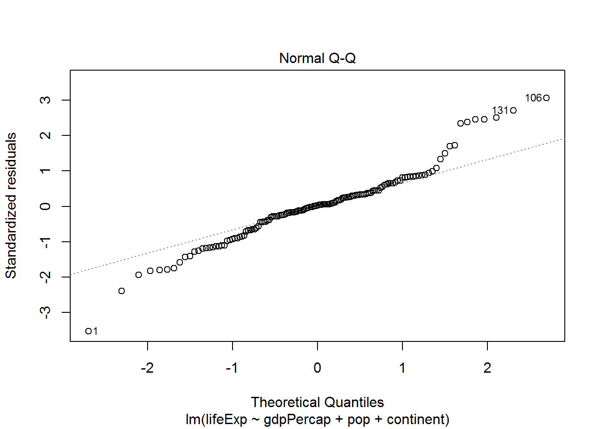
plot(reg1, which = 3)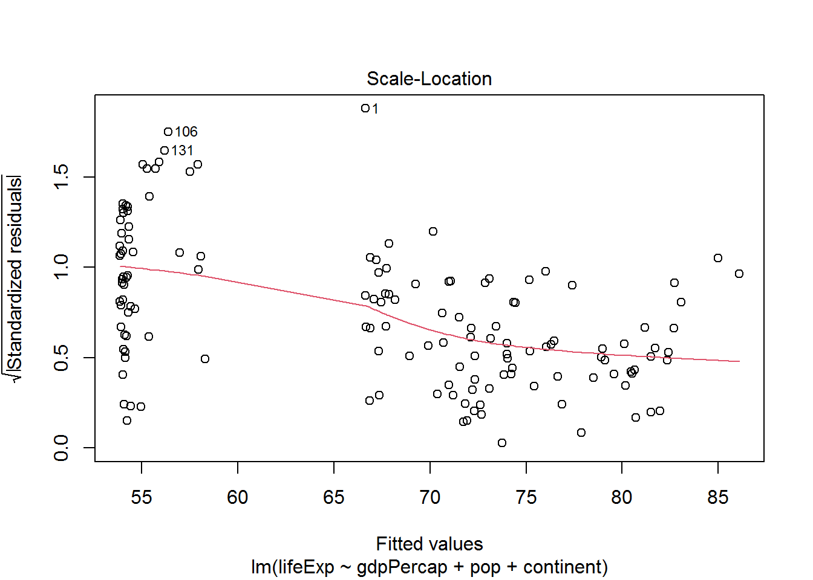
par(mfrow=c(3,2))
plot(reg1, which = 1:6)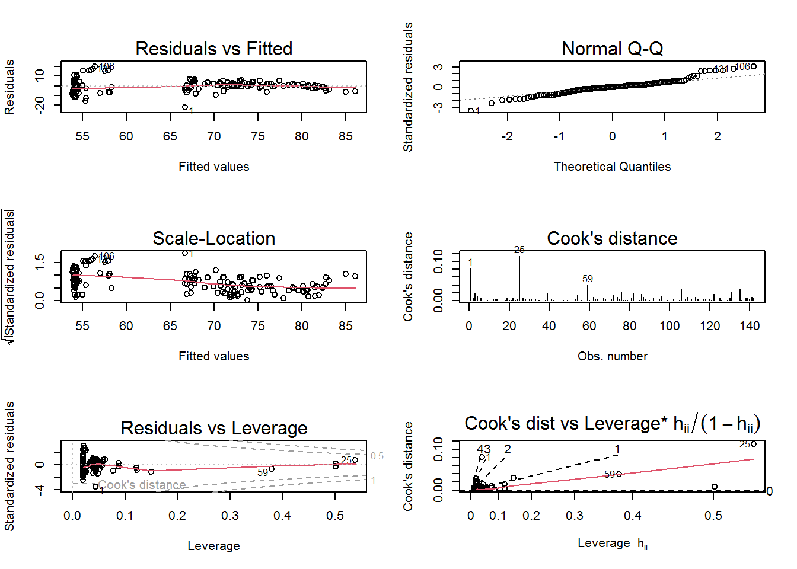
Ak chceme zobraziť všetky diagnostické grafy, tak je v base R potrebné definovať parametre, ako budú usporiadané a spustiť ich spolu s plot funkciou (označiť obe funkcie a spustiť ich naraz pomocou ctrl + enter).
Pre vizualizácie sme si však ako go to možnosť ukazovali ggplot. Ten sa dá využiť aj pri vizualizácií diagnostických grafov. Potrebujeme na to rozšírenie ggfortify. Táto knižnica nám umožní zobraziť kľúčové diagnostické grafy s tým, že ich budeme vedieť upravovať za pomoci ggplotu. V argumetoch definujeme, ktorý model chceme vizualizovať, ktoré z which grafov si chceme vybrať a koľko riadkov/stĺpcov má mať výsledný graf.
#install.packages("ggfortify") #ak nemáte nainštalovanú knižnicu ggfortify, odstránte # a spustite príkaz
library(ggfortify)
autoplot(reg1, which = 1:6, ncol = 3, label.size = 3)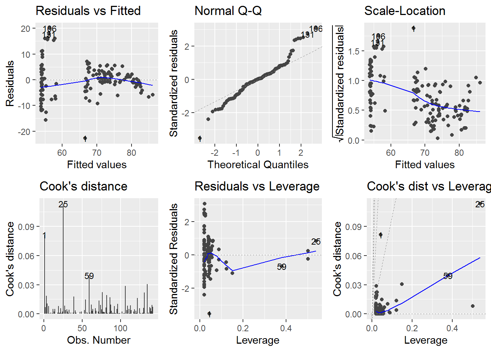
Čo nám ukazujú diagnostické grafy? (v poradí z ľava do prava)
1. Reziduá vs odhadnované hodnoty
- ukazuje nám, či je splnená asumpcia linearity
- ideálne by graf nemal ukazovať žiadny trend na základe odhadovaných hodnôt vymykajúci sa rovnej čiare
- červená čiara by preto mala byť horizontálna na úrovni okolo 0
- ak vidíme nejaký iný trend na červenej čiare, tak nám to hovorí, že je niečo zle s linearitou modelu
- ak nie je táto asumpcia splnená, tak pri lineárnej regresii vedie k zlým odhadom koeficientov
2. Normálne rozdelenie reziduí
- QQ plot nám ukazuje, či sú reziduá normálne rozdelené
- na splnenie tejto asumpcie by mali byť body na zobrazenej čiare
- ak táto podmienka nie je splnená, tak štandardné chyby nebudú mať rozdelenie potrebné na výpočty jednotlivých štatistík (t a f) a intervaly spoľahlivosti spolu s p-values budú nepresné
3. Homogénnosť rozdelenia náhodných chýb (homoskedsticita)
- graf ukazuje reziduá (druhú odmocninu ich štandardizovaných hodnôt) a ich rozloženie v rámci rozsahu nezávislých premenných
- hovorí nám, či majú náhodné chyby rovnaký rozptyl
- ak je červená čiara horizontálna s približne rovnakým rozložením reziduí po oboch stranách, tak je podmienka splnená
- ak nie je a máme v modeli heteroskedasticitu, tak treba uvažovať nad transformáciou niektorých premenných (log, mocnina, odmocnina a pod. podľa charakteru distribúcie hodnôt premenných)
- heteroskedasticita pri lineárnej regresii vedie k podhodnocovaniu štandardných chýb a teda k zlým p-values
4. po 6. Vzdialené pozorovania ovplyvňujúce regresné koeficienty
- tieto grafy definujú, ktoré pozorovania sú najvzdialenejšie
- porovnávajú ich s hranicami Cook’s distance a leverage
- ak existujú vzdialené pozorovania ovplyvňujúce koeficienty, tak tie sú potom nepresné iba kvôli zopár pozorovaniam
Okrem týchto vizualizácií existuje knižnica, ktorá funguje pre rôzne modely a pomáha ukázať viaceré efekty, diagnostické grafy a podobne. Táto knižnica sa volá sjPlot. V rámci nej definujeme model, na základe ktorého chceme robiť vizualizácie a zároveň, čo presne nás z modelu zaujíma.
#install.packages("sjPlot") #ak nemáte nainštalovanú knižnicu sjPlot, odstránte # a spustite príkaz
library(sjPlot)
plot_model(reg1, type = "est")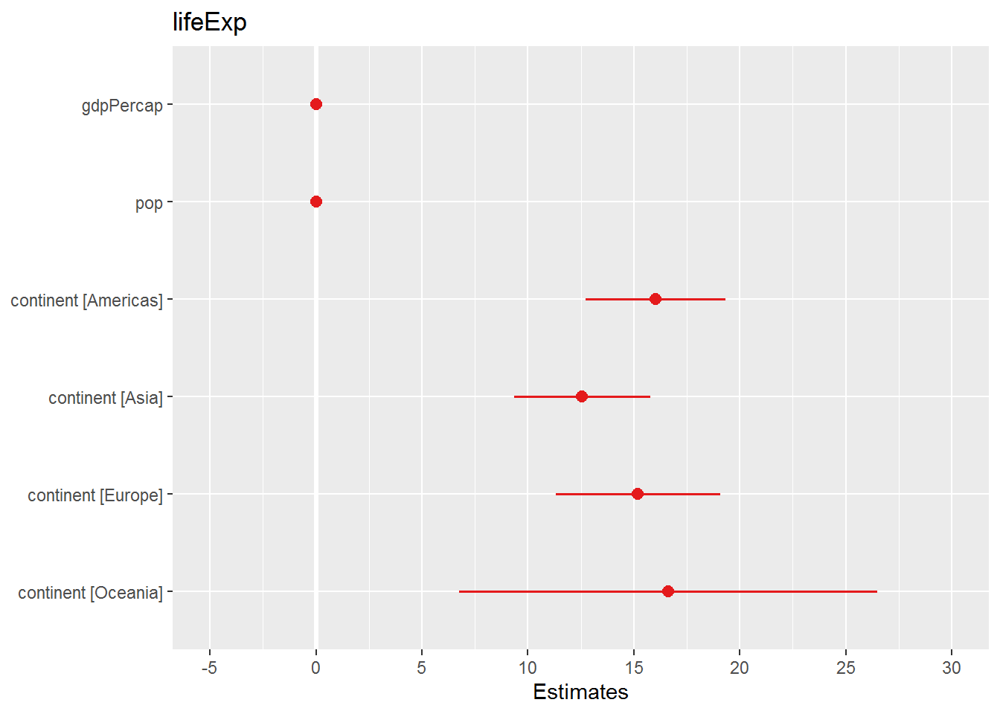
plot_model(reg1, type = "eff",
grid = T)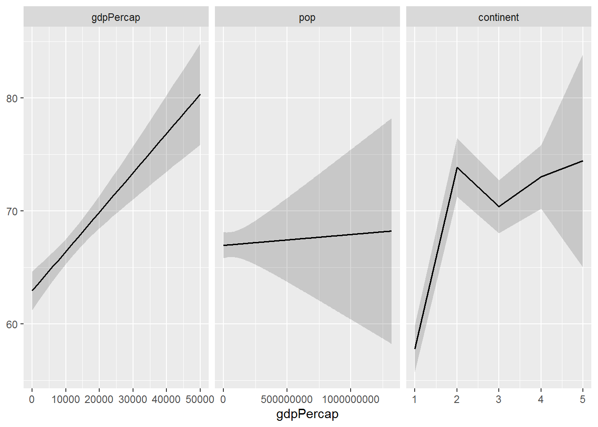
plot_model(reg1, type = "diag")## [[1]]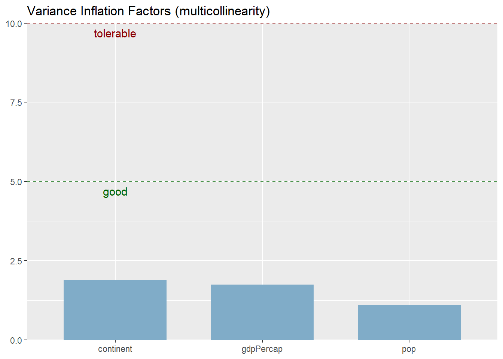
##
## [[2]]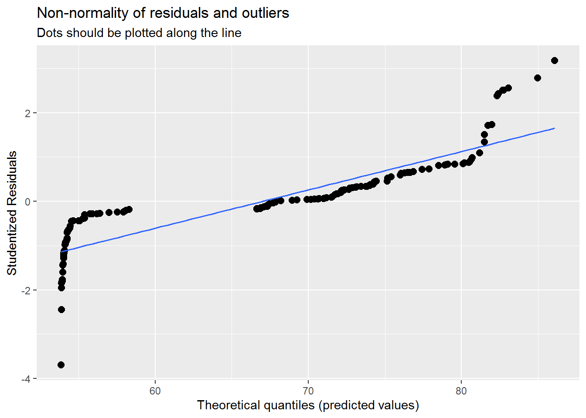
##
## [[3]]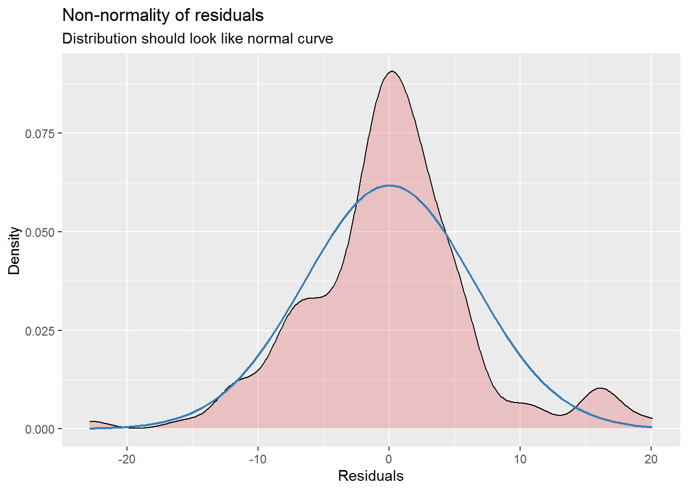
##
## [[4]]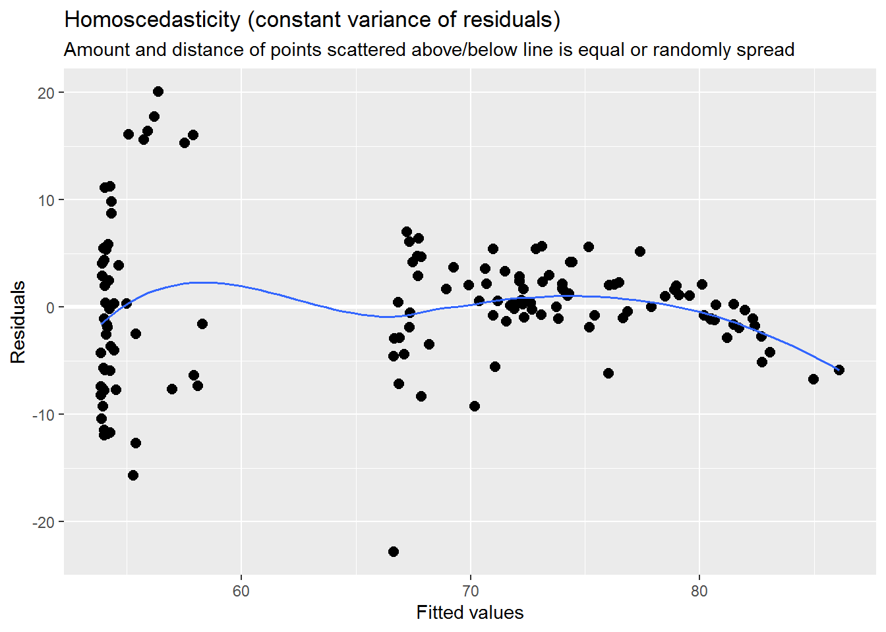
diag nám zobrazí diagnostické grafy, ktoré pre daný model dávajú zmysel (aj keď sú pravdepodobne inak počítané, ako pri predošlých príkladoch - otázka aktualizácie knižnice alebo zlého nastavenia?), est nám ukáže porovnanie jednotlivých koeficientov a eff efekt jednotlivých nezávislých premenných.
5.10.2 Objekty modelu a broom knižnica
Poďme sa pozrieť na objekty v našom modeli. Najrýchlejšia možnosť je pozrieť sa na štruktúru objektu reg1.
str(reg1)## List of 13
## $ coefficients : Named num [1:7] 53.71419005162 0.000347912381 0.000000000959 16.031372669302 12.564042744984 ...
## ..- attr(*, "names")= chr [1:7] "(Intercept)" "gdpPercap" "pop" "continentAmericas" ...
## $ residuals : Named num [1:142] -22.82 5.44 16.39 -12.66 1.09 ...
## ..- attr(*, "names")= chr [1:142] "1" "2" "3" "4" ...
## $ effects : Named num [1:142] -798.5 97.3 12.3 39.1 29.5 ...
## ..- attr(*, "names")= chr [1:142] "(Intercept)" "gdpPercap" "pop" "continentAmericas" ...
## $ rank : int 7
## $ fitted.values: Named num [1:142] 66.6 71 55.9 55.4 74.2 ...
## ..- attr(*, "names")= chr [1:142] "1" "2" "3" "4" ...
## $ assign : int [1:7] 0 1 2 3 3 3 3
## $ qr :List of 5
## ..$ qr : num [1:142, 1:7] -11.9164 0.0839 0.0839 0.0839 0.0839 ...
## .. ..- attr(*, "dimnames")=List of 2
## .. .. ..$ : chr [1:142] "1" "2" "3" "4" ...
## .. .. ..$ : chr [1:7] "(Intercept)" "gdpPercap" "pop" "continentAmericas" ...
## .. ..- attr(*, "assign")= int [1:7] 0 1 2 3 3 3 3
## .. ..- attr(*, "contrasts")=List of 1
## .. .. ..$ continent: chr "contr.treatment"
## ..$ qraux: num [1:7] 1.08 1.03 1.01 1.04 1.03 ...
## ..$ pivot: int [1:7] 1 2 3 4 5 6 7
## ..$ tol : num 0.0000001
## ..$ rank : int 7
## ..- attr(*, "class")= chr "qr"
## $ df.residual : int 135
## $ contrasts :List of 1
## ..$ continent: chr "contr.treatment"
## $ xlevels :List of 1
## ..$ continent: chr [1:5] "Africa" "Americas" "Asia" "Europe" ...
## $ call : language lm(formula = lifeExp ~ gdpPercap + pop + continent, data = gapminder_cs)
## $ terms :Classes 'terms', 'formula' language lifeExp ~ gdpPercap + pop + continent
## .. ..- attr(*, "variables")= language list(lifeExp, gdpPercap, pop, continent)
## .. ..- attr(*, "factors")= int [1:4, 1:3] 0 1 0 0 0 0 1 0 0 0 ...
## .. .. ..- attr(*, "dimnames")=List of 2
## .. .. .. ..$ : chr [1:4] "lifeExp" "gdpPercap" "pop" "continent"
## .. .. .. ..$ : chr [1:3] "gdpPercap" "pop" "continent"
## .. ..- attr(*, "term.labels")= chr [1:3] "gdpPercap" "pop" "continent"
## .. ..- attr(*, "order")= int [1:3] 1 1 1
## .. ..- attr(*, "intercept")= int 1
## .. ..- attr(*, "response")= int 1
## .. ..- attr(*, ".Environment")=<environment: R_GlobalEnv>
## .. ..- attr(*, "predvars")= language list(lifeExp, gdpPercap, pop, continent)
## .. ..- attr(*, "dataClasses")= Named chr [1:4] "numeric" "numeric" "numeric" "factor"
## .. .. ..- attr(*, "names")= chr [1:4] "lifeExp" "gdpPercap" "pop" "continent"
## $ model :'data.frame': 142 obs. of 4 variables:
## ..$ lifeExp : num [1:142] 43.8 76.4 72.3 42.7 75.3 ...
## ..$ gdpPercap: num [1:142] 975 5937 6223 4797 12779 ...
## ..$ pop : int [1:142] 31889923 3600523 33333216 12420476 40301927 20434176 8199783 708573 150448339 10392226 ...
## ..$ continent: Factor w/ 5 levels "Africa","Americas",..: 3 4 1 1 2 5 4 3 3 4 ...
## ..- attr(*, "terms")=Classes 'terms', 'formula' language lifeExp ~ gdpPercap + pop + continent
## .. .. ..- attr(*, "variables")= language list(lifeExp, gdpPercap, pop, continent)
## .. .. ..- attr(*, "factors")= int [1:4, 1:3] 0 1 0 0 0 0 1 0 0 0 ...
## .. .. .. ..- attr(*, "dimnames")=List of 2
## .. .. .. .. ..$ : chr [1:4] "lifeExp" "gdpPercap" "pop" "continent"
## .. .. .. .. ..$ : chr [1:3] "gdpPercap" "pop" "continent"
## .. .. ..- attr(*, "term.labels")= chr [1:3] "gdpPercap" "pop" "continent"
## .. .. ..- attr(*, "order")= int [1:3] 1 1 1
## .. .. ..- attr(*, "intercept")= int 1
## .. .. ..- attr(*, "response")= int 1
## .. .. ..- attr(*, ".Environment")=<environment: R_GlobalEnv>
## .. .. ..- attr(*, "predvars")= language list(lifeExp, gdpPercap, pop, continent)
## .. .. ..- attr(*, "dataClasses")= Named chr [1:4] "numeric" "numeric" "numeric" "factor"
## .. .. .. ..- attr(*, "names")= chr [1:4] "lifeExp" "gdpPercap" "pop" "continent"
## - attr(*, "class")= chr "lm"Tak toto vyzerá vcelku zmätočne. Skúsme sa pozrieť iba na názvy elementov v našom objekte.
names(reg1)## [1] "coefficients" "residuals" "effects" "rank"
## [5] "fitted.values" "assign" "qr" "df.residual"
## [9] "contrasts" "xlevels" "call" "terms"
## [13] "model"Ako sme si spomínali, objekty, v ktorých sú uložené modely, sú listami. Pristupovať do nich vieme už nám známymi metódami.
reg1$coefficients## (Intercept) gdpPercap pop continentAmericas
## 53.7141900516203989 0.0003479123813783 0.0000000009586008 16.0313726693021081
## continentAsia continentEurope continentOceania
## 12.5640427449841319 15.1989177617592635 16.6222095573923809Na elementy v rámci objektu s modelom sa dá nazerať aj inak, a to pomocou vstavaných funkcií base R.
coef(reg1)## (Intercept) gdpPercap pop continentAmericas
## 53.7141900516203989 0.0003479123813783 0.0000000009586008 16.0313726693021081
## continentAsia continentEurope continentOceania
## 12.5640427449841319 15.1989177617592635 16.6222095573923809Taktiež je užitočné si zapamätať, že ak na náš objekt s modelom použijeme funkciu summary a jej výsledok uložíme do iného objektu, tak sa dostaneme k údajom, ktoré môžu byť taktiež nápomocné.
summary_reg1 <- summary(reg1)
str(summary_reg1)## List of 11
## $ call : language lm(formula = lifeExp ~ gdpPercap + pop + continent, data = gapminder_cs)
## $ terms :Classes 'terms', 'formula' language lifeExp ~ gdpPercap + pop + continent
## .. ..- attr(*, "variables")= language list(lifeExp, gdpPercap, pop, continent)
## .. ..- attr(*, "factors")= int [1:4, 1:3] 0 1 0 0 0 0 1 0 0 0 ...
## .. .. ..- attr(*, "dimnames")=List of 2
## .. .. .. ..$ : chr [1:4] "lifeExp" "gdpPercap" "pop" "continent"
## .. .. .. ..$ : chr [1:3] "gdpPercap" "pop" "continent"
## .. ..- attr(*, "term.labels")= chr [1:3] "gdpPercap" "pop" "continent"
## .. ..- attr(*, "order")= int [1:3] 1 1 1
## .. ..- attr(*, "intercept")= int 1
## .. ..- attr(*, "response")= int 1
## .. ..- attr(*, ".Environment")=<environment: R_GlobalEnv>
## .. ..- attr(*, "predvars")= language list(lifeExp, gdpPercap, pop, continent)
## .. ..- attr(*, "dataClasses")= Named chr [1:4] "numeric" "numeric" "numeric" "factor"
## .. .. ..- attr(*, "names")= chr [1:4] "lifeExp" "gdpPercap" "pop" "continent"
## $ residuals : Named num [1:142] -22.82 5.44 16.39 -12.66 1.09 ...
## ..- attr(*, "names")= chr [1:142] "1" "2" "3" "4" ...
## $ coefficients : num [1:7, 1:4] 53.71419005162 0.000347912381 0.000000000959 16.031372669302 12.564042744984 ...
## ..- attr(*, "dimnames")=List of 2
## .. ..$ : chr [1:7] "(Intercept)" "gdpPercap" "pop" "continentAmericas" ...
## .. ..$ : chr [1:4] "Estimate" "Std. Error" "t value" "Pr(>|t|)"
## $ aliased : Named logi [1:7] FALSE FALSE FALSE FALSE FALSE FALSE ...
## ..- attr(*, "names")= chr [1:7] "(Intercept)" "gdpPercap" "pop" "continentAmericas" ...
## $ sigma : num 6.6
## $ df : int [1:3] 7 135 7
## $ r.squared : num 0.714
## $ adj.r.squared: num 0.701
## $ fstatistic : Named num [1:3] 56.2 6 135
## ..- attr(*, "names")= chr [1:3] "value" "numdf" "dendf"
## $ cov.unscaled : num [1:7, 1:7] 0.02011186815794 -0.00000024029387 -0.00000000000777 -0.01718868145553 -0.01621759549712 ...
## ..- attr(*, "dimnames")=List of 2
## .. ..$ : chr [1:7] "(Intercept)" "gdpPercap" "pop" "continentAmericas" ...
## .. ..$ : chr [1:7] "(Intercept)" "gdpPercap" "pop" "continentAmericas" ...
## - attr(*, "class")= chr "summary.lm"5.10.2.1 broom a jej výhody
Na “upratanie” celkom zmätočného výstupu z regresie použijeme funkciu tidy z broom knižnice. Táto funkcia nám vytvorí data frame s hodnotami vypočítanými v modeli v stĺpcoch a každou nezávislou premennou v riadkoch.
#install.packages("broom") #ak nemáte nainštalovanú knižnicu broom, odstránte # a spustite príkaz
library(broom)
reg1_tidy <- tidy(reg1, conf.int = TRUE)
reg1_tidy## # A tibble: 7 x 7
## term estimate std.error statistic p.value conf.low conf.high
## <chr> <dbl> <dbl> <dbl> <dbl> <dbl> <dbl>
## 1 (Intercept) 5.37e+ 1 0.936 57.4 9.97e-97 5.19e+1 5.56e+1
## 2 gdpPercap 3.48e- 4 0.0000572 6.09 1.13e- 8 2.35e-4 4.61e-4
## 3 pop 9.59e-10 0.00000000393 0.244 8.07e- 1 -6.81e-9 8.72e-9
## 4 continentAmericas 1.60e+ 1 1.67 9.59 6.20e-17 1.27e+1 1.93e+1
## 5 continentAsia 1.26e+ 1 1.62 7.75 1.97e-12 9.36e+0 1.58e+1
## 6 continentEurope 1.52e+ 1 1.97 7.73 2.20e-12 1.13e+1 1.91e+1
## 7 continentOceania 1.66e+ 1 4.99 3.33 1.12e- 3 6.75e+0 2.65e+1Na získanie viac informácií o našom modeli a ich pridanie do ďalšieho datasetu použijeme augment funkciu. Tá pridá odhadované hodnoty spolu s reziduami.
reg1_aug <- augment(reg1)
head(reg1_aug, 10)## # A tibble: 10 x 10
## lifeExp gdpPercap pop conti~1 .fitted .resid .hat .sigma .cooksd .std.~2
## <dbl> <dbl> <int> <fct> <dbl> <dbl> <dbl> <dbl> <dbl> <dbl>
## 1 43.8 975. 3.19e7 Asia 66.6 -22.8 0.0436 6.31 8.15e-2 -3.54
## 2 76.4 5937. 3.60e6 Europe 71.0 5.44 0.0612 6.60 6.74e-3 0.851
## 3 72.3 6223. 3.33e7 Africa 55.9 16.4 0.0201 6.47 1.85e-2 2.51
## 4 42.7 4797. 1.24e7 Africa 55.4 -12.7 0.0195 6.53 1.07e-2 -1.94
## 5 75.3 12779. 4.03e7 Americ~ 74.2 1.09 0.0403 6.62 1.70e-4 0.169
## 6 81.2 34435. 2.04e7 Oceania 82.3 -1.10 0.502 6.62 8.04e-3 -0.237
## 7 79.8 36126. 8.20e6 Europe 81.5 -1.66 0.0425 6.62 4.19e-4 -0.257
## 8 75.6 29796. 7.09e5 Asia 76.6 -1.01 0.0557 6.62 2.09e-4 -0.158
## 9 64.1 1391. 1.50e8 Asia 66.9 -2.84 0.0396 6.62 1.14e-3 -0.440
## 10 79.4 33693. 1.04e7 Europe 80.6 -1.20 0.0389 6.62 2.00e-4 -0.186
## # ... with abbreviated variable names 1: continent, 2: .std.residAk sa chceme pozrieť na viac diagnostických údajov ohľadne modelu, tak použijeme glance funkciu.
glance(reg1)## # A tibble: 1 x 12
## r.squared adj.r.squa~1 sigma stati~2 p.value df logLik AIC BIC devia~3
## <dbl> <dbl> <dbl> <dbl> <dbl> <dbl> <dbl> <dbl> <dbl> <dbl>
## 1 0.714 0.701 6.60 56.2 2.41e-34 6 -466. 948. 971. 5875.
## # ... with 2 more variables: df.residual <int>, nobs <int>, and abbreviated
## # variable names 1: adj.r.squared, 2: statistic, 3: deviance
## # i Use `colnames()` to see all variable namesKeď už máme náš model usporiadaný v prehľadnejšom formáte, tak môžeme použiť ggplot na jeho vizualizáciu. Pozrime sa najprv na to, či náš model spĺňa asumpciu linearity.
ggplot(data = reg1_aug,
mapping = aes(x = .fitted,
y = .resid)) +
geom_point() +
geom_smooth(se = F)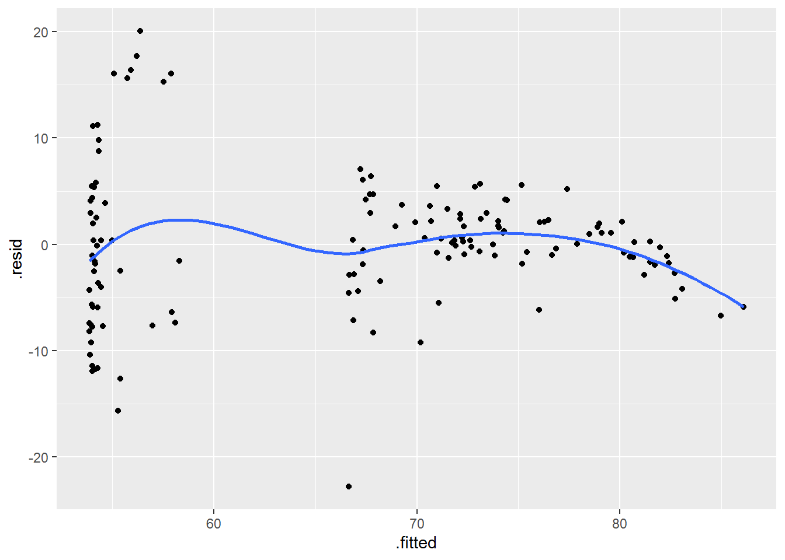
Alebo môžeme vytvoriť graf s koeficiantami (nezabudnite pridať do funkcie tidy vyššie argument conf.int = T). Aby sme čitateľovi hneď ukázali, ktoré koeficienty sú štatisticky signifikantné, tak ich v grafe zvýrazníme. Povedzme, že zvýrazníme premenné, ktoré sú signifikantné pri p < 0,001.
reg1_tidy_p <- reg1_tidy %>%
mutate(significant = as.factor(ifelse(p.value < 0.001, 1, 0))) %>%
filter(term != "(Intercept)")
ggplot(reg1_tidy_p, aes(reorder(term, estimate), estimate, color = significant)) +
geom_point() +
scale_color_manual(values = c("grey", "red"), guide = "none") +
geom_errorbar(aes(ymin = conf.low, ymax = conf.high, width = 0.1)) +
coord_flip() +
theme_classic()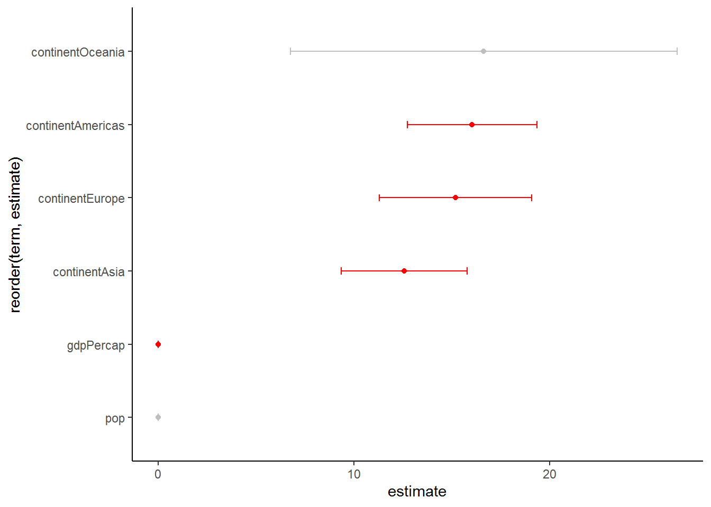